Explora el Laboratorio de Psicología
Bienvenidos al catálogo de pruebas psicológicas de la Corporación Universitaria Iberoamericana, sede Amalfi ubicada en la Carrera 16 #79–34, en la ciudad de Bogotá.
Aquí encontrarás una variedad de pruebas disponibles para consulta y uso profesional.
Acerca de Nosotros
El Laboratorio de Psicología se dedica a ofrecer una amplia gama de herramientas psicológicas tanto en formatos físicos, semidigitales y digitales. Nuestro equipo trabaja arduamente para proporcionar a los profesionales de la psicología y la investigación acceso a las técnicas más avanzadas, respaldadas por información técnica exhaustiva. Con nuestro compromiso constante con la innovación y la calidad, nos aseguramos de ser un recurso confiable para el avance de la práctica profesional.
Catalogo de Pruebas
Clínicas
01. IDE- Inventario de Dependencia Emocional
Año de edición: 2025
Constructo a Evaluar: Dependencia Emocional en las Relaciones de Pareja.
Propósito: Guiar intervenciones para construir vínculos de pareja más saludables y duraderos.
Autores: Jesús Joel Aiquipa Tello (Facultad de Psicología, Universidad Nacional Mayor de San Marcos – Lima, Perú)
Aplicación: Individual o colectiva.
Duración: Entre 20 y 25 minutos.
Edad: Adultos ≥18 años (hasta ±55 en normativas).
Semidigital: Manual de aplicación (físico) / Formato: electrónico (digital)
Constructo a Evaluar: Dependencia Emocional en las Relaciones de Pareja.
Propósito: Guiar intervenciones para construir vínculos de pareja más saludables y duraderos.
Autores: Jesús Joel Aiquipa Tello (Facultad de Psicología, Universidad Nacional Mayor de San Marcos – Lima, Perú)
Aplicación: Individual o colectiva.
Duración: Entre 20 y 25 minutos.
Edad: Adultos ≥18 años (hasta ±55 en normativas).
Semidigital: Manual de aplicación (físico) / Formato: electrónico (digital)
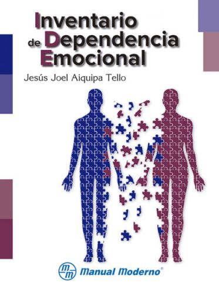
SEMIDIGITAL
Numeración en el Laboratorio: 01
02. STAI-Cuestionario de ansiedad Rasgo-Estado
Año de edición: 2015
Constructo a Evaluar: Constructo psicológico de la ansiedad
Propósito: Facilitar el diseño de intervenciones terapéuticas dirigidas a mejorar la calidad de las relaciones interpersonales basadas en dependencia emocional.
Autores: C. D. Spielberger, R. L. Gorsuch y R. E. Lushene.
Aplicación: Individual o colectiva.
Duración: 15–20 minutos.
Edad: Adolescentes y adultos, con un nivel cultural mínimo para comprender las instrucciones y enunciados del cuestionario.
Constructo a Evaluar: Constructo psicológico de la ansiedad
Propósito: Facilitar el diseño de intervenciones terapéuticas dirigidas a mejorar la calidad de las relaciones interpersonales basadas en dependencia emocional.
Autores: C. D. Spielberger, R. L. Gorsuch y R. E. Lushene.
Aplicación: Individual o colectiva.
Duración: 15–20 minutos.
Edad: Adolescentes y adultos, con un nivel cultural mínimo para comprender las instrucciones y enunciados del cuestionario.

Numeración en el Laboratorio: 02
03. IAC- Inventario de adaptación de conducta
Año de edición: 2015
Constructo a Evaluar: Evaluación del grado de adaptación de la persona en los ámbitos personal, familiar, escolar y social.
Propósito: Permite evaluar el nivel de adaptación del adolescente o persona en los ámbitos personal, familiar, escolar y social, identificando conductas y pensamientos que pueden dificultar su integración y funcionamiento, para planificar apoyos y estrategias de mejora específicas.
Autores: Departamento de I+D+i de Hogrefe TEA Ediciones.
Aplicación: Individual y colectiva.
Duración: 30 minutos, aproximadamente.
Edad: De 11 a 18 años
Constructo a Evaluar: Evaluación del grado de adaptación de la persona en los ámbitos personal, familiar, escolar y social.
Propósito: Permite evaluar el nivel de adaptación del adolescente o persona en los ámbitos personal, familiar, escolar y social, identificando conductas y pensamientos que pueden dificultar su integración y funcionamiento, para planificar apoyos y estrategias de mejora específicas.
Autores: Departamento de I+D+i de Hogrefe TEA Ediciones.
Aplicación: Individual y colectiva.
Duración: 30 minutos, aproximadamente.
Edad: De 11 a 18 años
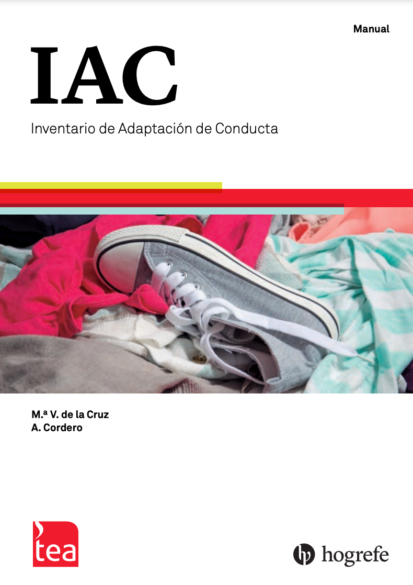
Numeración en el Laboratorio: 03
04. EEHSA-Escala de habilidades sociales para adolescentes.
Año de edición: 2014
Constructo a Evaluar: Evaluación de habilidades sociales en adolescentes
Propósito: Escala de Habilidades Sociales para Adolescentes: Mide habilidades sociales clave para la interacción positiva en adolescentes.
Autores: Aiquipa Tello, Jesús Joel
Aplicación: Se puede aplicar individual o colectivamente.
Duración: 30 minutos aprox.
Edad: Adolescentes y adultos hasta 25 años.
Semidigital: Manual de aplicación (físico) / Tarjeta de usos electrónico (digital)
Constructo a Evaluar: Evaluación de habilidades sociales en adolescentes
Propósito: Escala de Habilidades Sociales para Adolescentes: Mide habilidades sociales clave para la interacción positiva en adolescentes.
Autores: Aiquipa Tello, Jesús Joel
Aplicación: Se puede aplicar individual o colectivamente.
Duración: 30 minutos aprox.
Edad: Adolescentes y adultos hasta 25 años.
Semidigital: Manual de aplicación (físico) / Tarjeta de usos electrónico (digital)
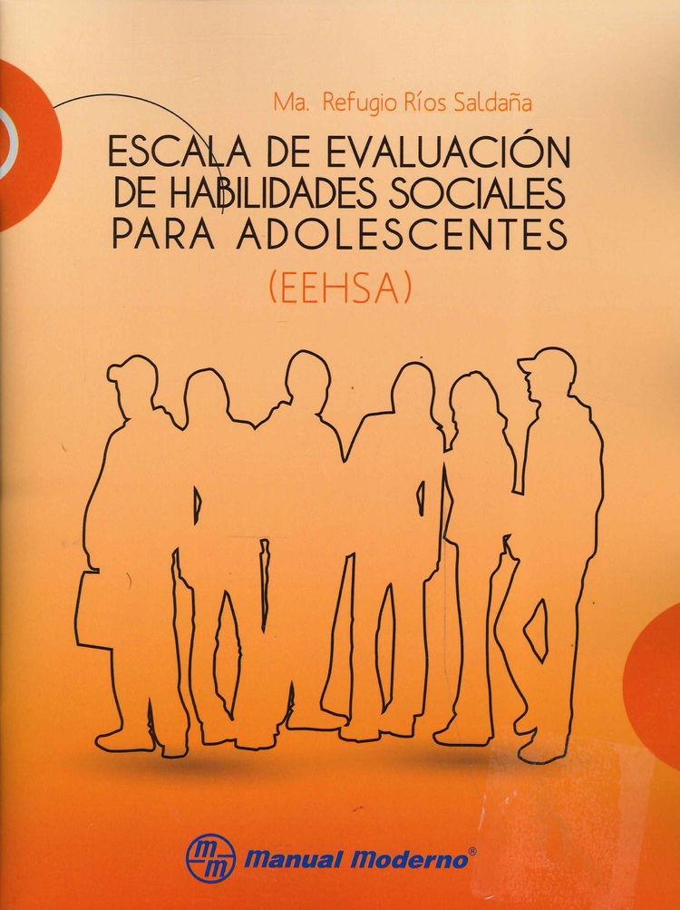
SEMIDIGITAL
Numeración en el Laboratorio: 04
05. EDI - 3 Inventario de Trastornos de la Conducta Alimentaria
Año de edición: 2010
Constructo a Evaluar: Trastornos de la conducta alimentaria
Propósito: Inventario de Trastornos de la Conducta Alimentaria:Detecta síntomas y riesgos de trastornos alimentarios.
Autores: David M. Garner.
Aplicación: Individual.
Duración: 20 Minutos Aproximadamente.
Edad: De 12 años en adelante.
Constructo a Evaluar: Trastornos de la conducta alimentaria
Propósito: Inventario de Trastornos de la Conducta Alimentaria:Detecta síntomas y riesgos de trastornos alimentarios.
Autores: David M. Garner.
Aplicación: Individual.
Duración: 20 Minutos Aproximadamente.
Edad: De 12 años en adelante.
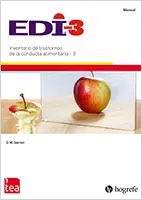
Numeración en el Laboratorio: 05
06. CRI A- Inventario de respuesta de Afrontamiento.
Año de edición: 2010
Constructo a Evaluar: Respuestas de afrontamiento de una persona adulta ante un problema.
Propósito: Inventario de Respuesta de Afrontamiento: Evalúa estrategias de afrontamiento frente al estrés.
Autores: R.H. Moos
Aplicación: Individual o Colectiva.
Duración: 10 a 15 Minutos en el formato de cuestionario y entre 15 y 30 Minutos en el formato de entrevista estructurada.
Edad: Adultos
Constructo a Evaluar: Respuestas de afrontamiento de una persona adulta ante un problema.
Propósito: Inventario de Respuesta de Afrontamiento: Evalúa estrategias de afrontamiento frente al estrés.
Autores: R.H. Moos
Aplicación: Individual o Colectiva.
Duración: 10 a 15 Minutos en el formato de cuestionario y entre 15 y 30 Minutos en el formato de entrevista estructurada.
Edad: Adultos
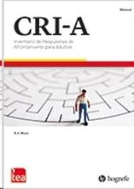
Numeración en el Laboratorio: 06
07. INCAVISA - Inventario de Calidad de Vida y Salud.
Año de edición: 2009
Constructo a Evaluar: Calidad de vida y salud percibida como experiencia subjetiva multidimensional de bienestar personal.
Propósito: Inventario de Calidad de Vida y Salud:Valora percepción del bienestar físico y emocional.
Autores: Riveros, Angélica Sánchez Sosa, Juan José
Aplicación: Individual
Edad de aplicación: 18 años en adelante
Constructo a Evaluar: Calidad de vida y salud percibida como experiencia subjetiva multidimensional de bienestar personal.
Propósito: Inventario de Calidad de Vida y Salud:Valora percepción del bienestar físico y emocional.
Autores: Riveros, Angélica Sánchez Sosa, Juan José
Aplicación: Individual
Edad de aplicación: 18 años en adelante
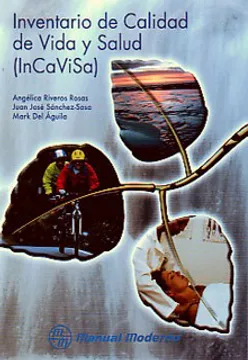
Numeración en el Laboratorio: 07
08. DERA Cuestionario de Desajuste Emocional y Recursos Adaptativos en Infertilidad
Año de edición: 2008
Constructo a Evaluar: El impacto psicológico de la infertilidad.
Propósito: Cuestionario de Desajuste Emocional en Infertilidad:Mide impacto emocional y recursos para afrontar la infertilidad.
Autores: C. Moreno, R. Antequera, y C. Jenaro
Aplicación: Se puede aplicar individual o colectivamente.
Duración: 10 a 15 Minutos Aproximadamente
Edad: A partir de 18 años
Constructo a Evaluar: El impacto psicológico de la infertilidad.
Propósito: Cuestionario de Desajuste Emocional en Infertilidad:Mide impacto emocional y recursos para afrontar la infertilidad.
Autores: C. Moreno, R. Antequera, y C. Jenaro
Aplicación: Se puede aplicar individual o colectivamente.
Duración: 10 a 15 Minutos Aproximadamente
Edad: A partir de 18 años
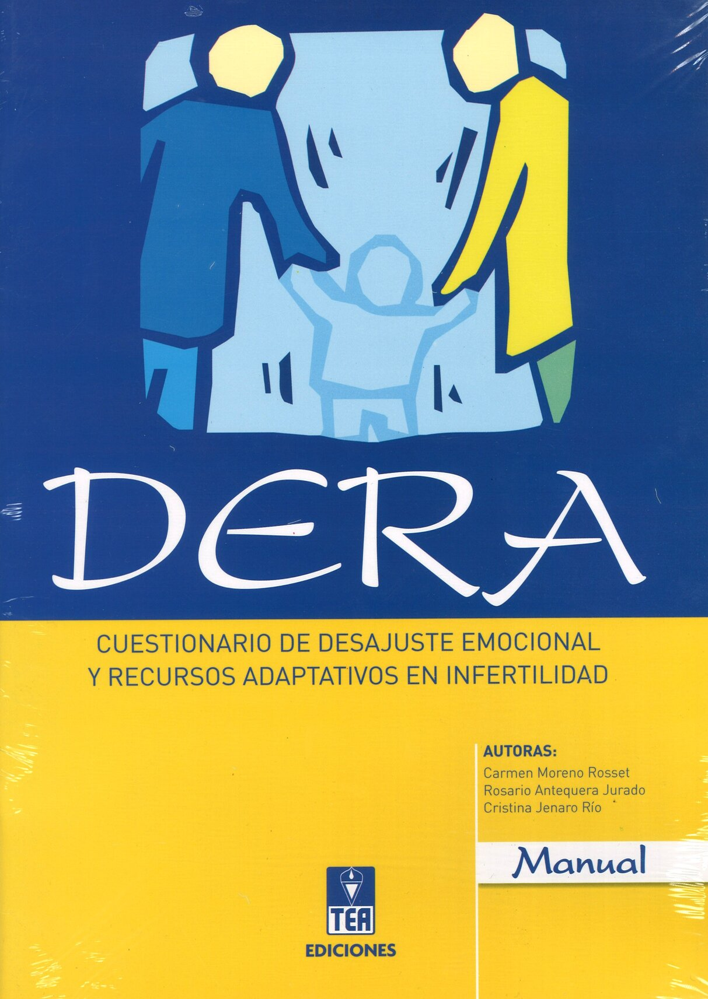
Numeración en el Laboratorio: 08
09. MSI-R Inventario de Satisfacción Marital Revisado.
Año de edición: 2008
Constructo a Evaluar: Factores de tensión que originan conflictos en la pareja.
Propósito: Inventario de Satisfacción Marital Revisado:Evalúa calidad y satisfacción en las relaciones matrimoniales.
Autores: Douglas K. Sinyde
Aplicación: Parejas
Duración de aplicación: Entre 20 y 30 minutos
Edad: Parejas sin rango de edad.
Constructo a Evaluar: Factores de tensión que originan conflictos en la pareja.
Propósito: Inventario de Satisfacción Marital Revisado:Evalúa calidad y satisfacción en las relaciones matrimoniales.
Autores: Douglas K. Sinyde
Aplicación: Parejas
Duración de aplicación: Entre 20 y 30 minutos
Edad: Parejas sin rango de edad.
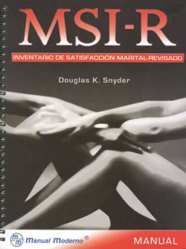
Numeración en el Laboratorio: 09
10. AMAS -Escala de Ansiedad Manifiesta en adultos
Año de edición: 2007
Constructo a evaluar: Evaluar el nivel de ansiedad manifiesta en adultos, clasificándola en cinco niveles: baja, esperada, elevación ligera, clínicamente significativa y extrema.
Propósito: Escala de Ansiedad Manifiesta en Adultos:Mide síntomas de ansiedad manifiesta clínica.
Propósito: Escala de Ansiedad Manifiesta en Adultos:Mide síntomas de ansiedad manifiesta clínica.
Autores: Cecil R. Reynolds, Berth O. Richmond y P. A. Lowe.
Edad recomendada: Versiones según población
AMAS‑A (Adultos, 19‑59 años): 36 ítems.
AMAS‑C (Universitarios): 49 ítems.
AMAS‑E (Adultos mayores, ≥ 60 años): 44 ítems
Duración estimada:15 minutos
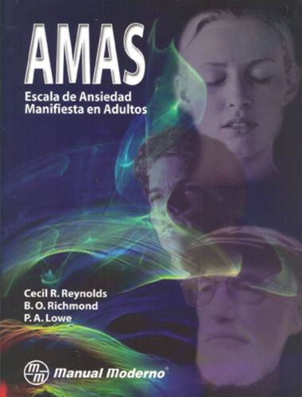
Numeración en el Laboratorio: 10
11. AD- Cuestionario de conductas antisociales y delictivas
Año de edición: 2001
Constructo a Evaluar: evalúa el grado de implicación en conductas antisociales y delictivas como indicador de riesgo psicosocial.
Propósito: Cuestionario de Conductas Antisociales y Delictivas:Detecta conductas antisociales en adolescentes/adultos.
Propósito: Cuestionario de Conductas Antisociales y Delictivas:Detecta conductas antisociales en adolescentes/adultos.
Autores: Seisdedos, N.
Aplicación: Individual
Duración de la prueba: 20 – 30 minutos.
Edad: 12 a 25 años aproximadamente.
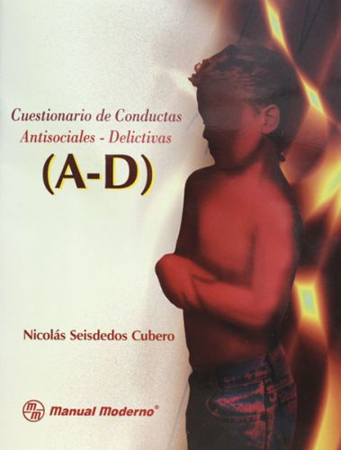
Numeración en el Laboratorio: 11
12. OQ - Cuestionario de sobreingesta alimentaria.
Año de edición: 2007
Constructo a Evaluar: Sobre ingesta de alimentos.
Propósito: Cuestionario de Sobreingesta Alimentaria:Evalúa control y patrones de sobreingesta.
Autores: OQ - Cuestionario de sobre ingesta alimentaria.
Aplicación: Se puede aplicar individual o colectivamente.
Duración: Entre 15 y 20 minutos.
Edad: A partir de los 9 años en adelante.
Constructo a Evaluar: Sobre ingesta de alimentos.
Propósito: Cuestionario de Sobreingesta Alimentaria:Evalúa control y patrones de sobreingesta.
Autores: OQ - Cuestionario de sobre ingesta alimentaria.
Aplicación: Se puede aplicar individual o colectivamente.
Duración: Entre 15 y 20 minutos.
Edad: A partir de los 9 años en adelante.
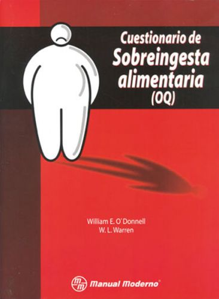
Numeración en el Laboratorio: 12
13. EMA - Escala multidimensional de asertividad.
Año de edición: 2004
Constructo a Evaluar: Dicha escala evalúa la capacidad de los estudiantes para expresar los derechos, creencias y sentimientos personales.
Propósito: Escala Multidimensional de Asertividad:Mide niveles y tipos de asertividad en contextos sociales.
Propósito: Escala Multidimensional de Asertividad:Mide niveles y tipos de asertividad en contextos sociales.
Autores: Mirta Margarita Flores Galaz, Rolando Díaz- Loving.
Aplicación: Se puede aplicar individual o colectivamente.
Edad: Mayores a 15 años
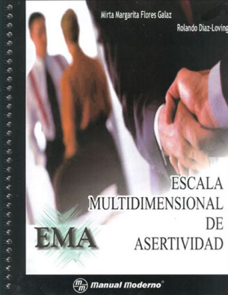
Evaluación automática por tarjeta virtual con claves
Numeración en el laboratorio: 13
14. CET DE - Cuestionario Tetradimensional para depresión.
Año de edición: 1998
Constructo a Evaluar: Tipificación, deteccción, diagnóstico y representación gráfica de las depresiones.
Propósito: evalúa la depresión estructurando sus síntomas en cuatro dimensiones: humor depresivo, que incluye tristeza y bajo estado de ánimo; anergia, entendida como la disminución significativa de energía y motivación; discomunicación, que refiere a dificultades para relacionarse y comunicarse socialmente; y ritmopatía, que abarca alteraciones de los ritmos biológicos y psicológicos como el sueño y el apetito, permitiendo así una visión más completa y diferenciada del trastorno depresivo.
Autores: Francisco Alonso Fernandez
Aplicación: manual
Duración: Entre 10 y 15 minutos
Constructo a Evaluar: Tipificación, deteccción, diagnóstico y representación gráfica de las depresiones.
Propósito: evalúa la depresión estructurando sus síntomas en cuatro dimensiones: humor depresivo, que incluye tristeza y bajo estado de ánimo; anergia, entendida como la disminución significativa de energía y motivación; discomunicación, que refiere a dificultades para relacionarse y comunicarse socialmente; y ritmopatía, que abarca alteraciones de los ritmos biológicos y psicológicos como el sueño y el apetito, permitiendo así una visión más completa y diferenciada del trastorno depresivo.
Autores: Francisco Alonso Fernandez
Aplicación: manual
Duración: Entre 10 y 15 minutos
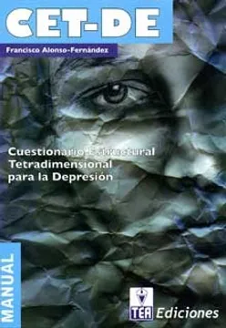
Numeración en el Laboratorio: 14
15. SUCESOS DE VIDA
Año de edición: 2003
Constructo a Evaluar: Detectar problemas emocionales en adolescentes.
Propósito: registro eventos vitales estresantes y su impacto.
Autores: Emilia Lucio Gómez Maqueo y Consuelo Durán Patiño
Aplicación: Se puede aplicar individual o colectivamente.
Duración: 45 minutos
Edad: Adolescentes de 13 a 18 años de edad
Constructo a Evaluar: Detectar problemas emocionales en adolescentes.
Propósito: registro eventos vitales estresantes y su impacto.
Autores: Emilia Lucio Gómez Maqueo y Consuelo Durán Patiño
Aplicación: Se puede aplicar individual o colectivamente.
Duración: 45 minutos
Edad: Adolescentes de 13 a 18 años de edad
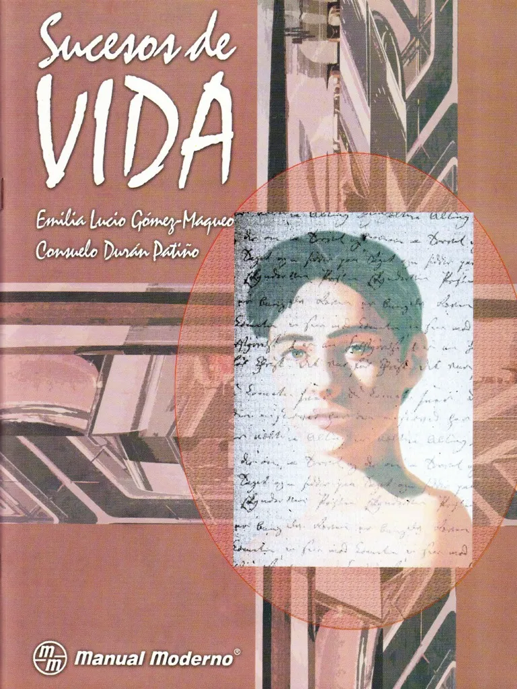
Numeración en el Laboratorio: 15
16. STAI - Cuestionario de Ansiedad Estado - Rasgo
Año de edición: 2023
Constructo a Evaluar: Ansiedad, estrés y depresión.
Propósito: mide dos conceptos independientes de ansiedad: la ansiedad como estado, que se refiere a un estado emocional transitorio caracterizado por tensión y preocupación que varía en intensidad y puede cambiar con el tiempo, y la ansiedad como rasgo, que es una propensión relativamente estable a percibir situaciones como amenazantes y responder con ansiedad. La escala consta de dos partes, cada una con 20 ítems, con respuestas en una escala tipo Likert que van de 0 a 3, donde las puntuaciones más altas indican mayor nivel de ansiedad en ambas dimensiones. Se utiliza para diagnosticar la ansiedad actual y la predisposición a la ansiedad en general, además de hacer seguimiento en procesos clínicos.
Autores: C. D. Spielberger, R. L. Gorsuch y R. E. Lushene
Aplicación: Se puede aplicar individual o colectivamente.
Duración: Aproximadamente 20 minutos
Edad: Adolescentes y adultos.
Constructo a Evaluar: Ansiedad, estrés y depresión.
Propósito: mide dos conceptos independientes de ansiedad: la ansiedad como estado, que se refiere a un estado emocional transitorio caracterizado por tensión y preocupación que varía en intensidad y puede cambiar con el tiempo, y la ansiedad como rasgo, que es una propensión relativamente estable a percibir situaciones como amenazantes y responder con ansiedad. La escala consta de dos partes, cada una con 20 ítems, con respuestas en una escala tipo Likert que van de 0 a 3, donde las puntuaciones más altas indican mayor nivel de ansiedad en ambas dimensiones. Se utiliza para diagnosticar la ansiedad actual y la predisposición a la ansiedad en general, además de hacer seguimiento en procesos clínicos.
Autores: C. D. Spielberger, R. L. Gorsuch y R. E. Lushene
Aplicación: Se puede aplicar individual o colectivamente.
Duración: Aproximadamente 20 minutos
Edad: Adolescentes y adultos.
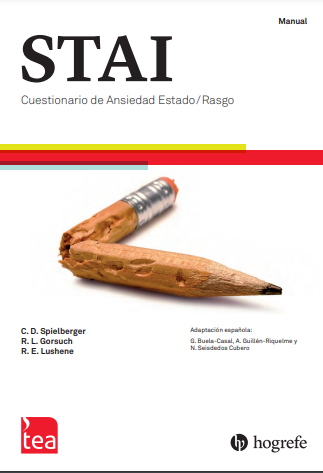
Numeración en el Laboratorio: 16
17. CMASR-2 Escala de Ansiedad Manifestada en Niños Revisada
Año de edición: 2022
Constructo a evaluar: es un instrumento de autoevaluación que mide la ansiedad en niños y adolescentes.
Propósito: Escala de Ansiedad Manifestada en Niños:Evalúa los síntomas de ansiedad en la población infantil.
Propósito: Escala de Ansiedad Manifestada en Niños:Evalúa los síntomas de ansiedad en la población infantil.
Autores: Sosa, C.D., Capafons, J.I. y López, C
Edad recomendada: 6 a 19 años
Forma de aplicación: Individual
Duración estimada: entre 10 y 15 minutos para la escala completa, y 5 minutos o menos para la escala corta.
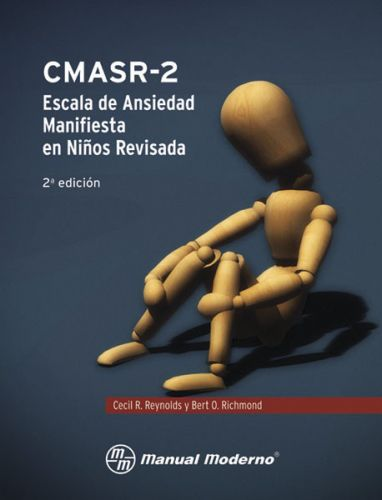
Numeración en el Laboratorio: 17
18. ChIPS - Entrevista para Síndromes Psiquiátricos en Niños y Adolescentes
Año de edición: 2020
Constructo a evaluar: evaluar la presencia de 20 trastornos psiquiátricos en niños y adolescentes.
Propósito: entrevista para Síndromes Psiquiátricos en Niños y Adolescentes:Diagnóstico estructurado de síndromes psiquiátricos infantiles.
Propósito: entrevista para Síndromes Psiquiátricos en Niños y Adolescentes:Diagnóstico estructurado de síndromes psiquiátricos infantiles.
Autores: Weller, Elizabeth B.; Weller, Ronald A.
Edad recomendada: De 6 a 18 años de edad.
Forma de aplicación: Individual
Duración estimada: variable
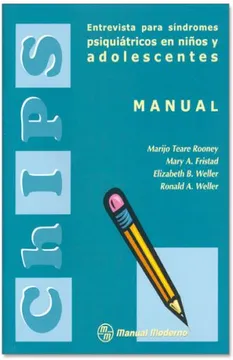
Numeración en el Laboratorio: 18
19. NEO PI-R. Inventario de Personalidad
Año de edición: 2008
Constructo a Evaluar: Personalidad
Propósito: El NEO PI-R evalúa cinco grandes rasgos de personalidad: neuroticismo, que mide la tendencia a experimentar emociones negativas y vulnerabilidad emocional; extraversión, que refleja sociabilidad, asertividad y energía en la interacción social; apertura a la experiencia, que indica curiosidad intelectual y creatividad; amabilidad, que valora la cooperación, empatía y disposición a colaborar; y responsabilidad, que mide organización, autodisciplina y perseverancia en el logro de objetivos.
Autores: P. T. Costa y R. R. McCrae.
Aplicación: Se puede aplicar individual o colectivamente.
Duración: 40 Minutos Aproximadamente.
Edad: Adolescentes y Adultos.
Constructo a Evaluar: Personalidad
Propósito: El NEO PI-R evalúa cinco grandes rasgos de personalidad: neuroticismo, que mide la tendencia a experimentar emociones negativas y vulnerabilidad emocional; extraversión, que refleja sociabilidad, asertividad y energía en la interacción social; apertura a la experiencia, que indica curiosidad intelectual y creatividad; amabilidad, que valora la cooperación, empatía y disposición a colaborar; y responsabilidad, que mide organización, autodisciplina y perseverancia en el logro de objetivos.
Autores: P. T. Costa y R. R. McCrae.
Aplicación: Se puede aplicar individual o colectivamente.
Duración: 40 Minutos Aproximadamente.
Edad: Adolescentes y Adultos.
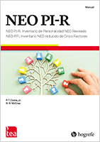
Numeración en el Laboratorio: 19
20. PERFIL DE ESTRES.
Año de edición: 2002
Constructo a Evaluar: 15 áreas relacionadas con el estrés en personas mayores de 20 años.
Propósito: el Perfil de Estrés evalúa los niveles generales de estrés y las principales fuentes que lo generan, identificando factores personales y ambientales que influyen en la percepción del estrés, con el fin de facilitar intervenciones preventivas y mejorar el bienestar psicológico.
Autores: Kenneth M. Nowack
Aplicación: Individual.
Duración: 20 a 25 minutos.
Edad: Para personas mayores de 20 años
Constructo a Evaluar: 15 áreas relacionadas con el estrés en personas mayores de 20 años.
Propósito: el Perfil de Estrés evalúa los niveles generales de estrés y las principales fuentes que lo generan, identificando factores personales y ambientales que influyen en la percepción del estrés, con el fin de facilitar intervenciones preventivas y mejorar el bienestar psicológico.
Autores: Kenneth M. Nowack
Aplicación: Individual.
Duración: 20 a 25 minutos.
Edad: Para personas mayores de 20 años
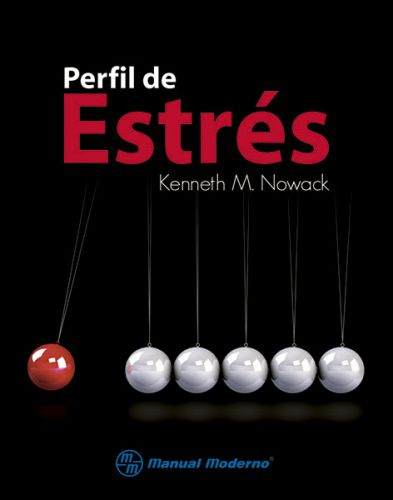
Numeración en el Laboratorio: 20
21. BFQ, Cuestionario "Big Five"
Año de edición: 1998
Constructo a Evaluar: Personalidad.
Propósito: evalúa cinco grandes factores de personalidad: energía (extraversión), que refleja dinamismo y sociabilidad; afabilidad (amabilidad), que mide cooperación y empatía; tesón (responsabilidad), relacionado con disciplina y organización; estabilidad emocional (neuroticismo inverso), que indica manejo emocional; y apertura a la experiencia, que refleja creatividad y curiosidad intelectua
Autores: G.V. Caprara; C. Barbaranelli y L. Borgogni
Aplicación: Se puede aplicar individual o colectivamente.
Duración: Tiempo variable, entre 20 y 30 minutos.
Edad: Adolescentes y adultos.
Parcialmente digital: Pines 0/25
Constructo a Evaluar: Personalidad.
Propósito: evalúa cinco grandes factores de personalidad: energía (extraversión), que refleja dinamismo y sociabilidad; afabilidad (amabilidad), que mide cooperación y empatía; tesón (responsabilidad), relacionado con disciplina y organización; estabilidad emocional (neuroticismo inverso), que indica manejo emocional; y apertura a la experiencia, que refleja creatividad y curiosidad intelectua
Autores: G.V. Caprara; C. Barbaranelli y L. Borgogni
Aplicación: Se puede aplicar individual o colectivamente.
Duración: Tiempo variable, entre 20 y 30 minutos.
Edad: Adolescentes y adultos.
Parcialmente digital: Pines 0/25
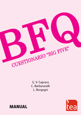
PARCIALMENTE DIGITAL
Numeración en el Laboratorio: 21
22. MMPI-2-RF Inventario Multifácetico de Minnesota- 2 Reestructurada (PERSONALIDAD)
Año de edición: 1998
Constructo a Evaluar:Evaluar de manera amplia la personalidad y la psicopatología en adultos.
Propósito: Inventario Multifásico de Minnesota:Diagnóstico clínico complejo de personalidad y psicopatologías.
Propósito: Inventario Multifásico de Minnesota:Diagnóstico clínico complejo de personalidad y psicopatologías.
Autores: Ben-Porath, Y. S. & Tellegen, A.
Aplicación: Individual
Duración de la prueba: 35 – 50 minutos
Edad: 18 años en adelante.
Parcialmente Digital: Tiene clave de acceso PIN para la corrección por internet, contenido del apéndice digital y físico en el manual.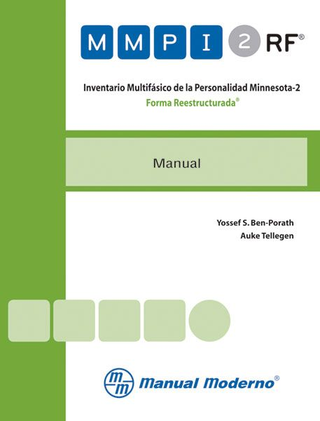
PARCIALMENTE DIGITAL
Numeración en el laboratorio: 22
23. CTI - Inventario de Pensamiento Constructivo.
Año de edición: 2012
Constructo a Evaluar: Inteligencia emocional.
Propósito: Inventario de Pensamiento Constructivo - evalúa tipos de pensamientos automáticos constructivos y destructivos relacionados con la forma en que una persona enfrenta problemas generales de la vida diaria, incluyendo su capacidad para adaptarse, solucionar conflictos y mantener actitudes positivas o rígidas. Mide dimensiones como emotividad, eficacia, rigidez, superstición, pensamiento esotérico e ilusión, permitiendo identificar patrones de pensamiento que influyen en el bienestar emocional y el desempeño personal y académico, facilitando un diagnóstico integral en contextos generales más que específicos.
Autores: Seymour Epstein
Aplicación: Se puede aplicar individual o colectivamente.
Duración: Variable, entre 15 y 30 minutos
Edad: Adolescentes y adultos, con nivel cultural medio.
Constructo a Evaluar: Inteligencia emocional.
Propósito: Inventario de Pensamiento Constructivo - evalúa tipos de pensamientos automáticos constructivos y destructivos relacionados con la forma en que una persona enfrenta problemas generales de la vida diaria, incluyendo su capacidad para adaptarse, solucionar conflictos y mantener actitudes positivas o rígidas. Mide dimensiones como emotividad, eficacia, rigidez, superstición, pensamiento esotérico e ilusión, permitiendo identificar patrones de pensamiento que influyen en el bienestar emocional y el desempeño personal y académico, facilitando un diagnóstico integral en contextos generales más que específicos.
Autores: Seymour Epstein
Aplicación: Se puede aplicar individual o colectivamente.
Duración: Variable, entre 15 y 30 minutos
Edad: Adolescentes y adultos, con nivel cultural medio.

Numeración en el Laboratorio: 23
24. WCST- Test de clasificación de tarjetas de WISCONSIN
Año de edición: 2001
Autores: Robert K. Heaton, Gordon J. Chelune, Jack L. Talley, Gary G. Kay y Glenn Curtiss.
Propósito: prueba de Clasificación de Tarjetas de Wisconsin:Mide flexibilidad cognitiva y funciones ejecutivas.
Propósito: prueba de Clasificación de Tarjetas de Wisconsin:Mide flexibilidad cognitiva y funciones ejecutivas.
Tipo de prueba: evalua funciones ejecutivas
Edad recomendada: 6 años y medio y 89 años.
Forma de aplicación: Individual
Duración estimada: 12 y 20 minutos

Numeración en el Laboratorio: 24
25. BLOC- Evaluación del lenguaje
Año de edición: 2002
Constructo a Evaluar: Lenguaje (morfología, sintaxis, pragmática y semántica).
Propósito: Evaluación del Lenguaje: Mide competencias en expresión y comprensión del lenguaje.
Autores: M. Puyuelo, E. Wiig, J. Renom y A. Solanas
Aplicación: Individual
Duración de la prueba para un módulo: 1 hora.
Edad: 5 a 14 años
Constructo a Evaluar: Lenguaje (morfología, sintaxis, pragmática y semántica).
Propósito: Evaluación del Lenguaje: Mide competencias en expresión y comprensión del lenguaje.
Autores: M. Puyuelo, E. Wiig, J. Renom y A. Solanas
Aplicación: Individual
Duración de la prueba para un módulo: 1 hora.
Edad: 5 a 14 años
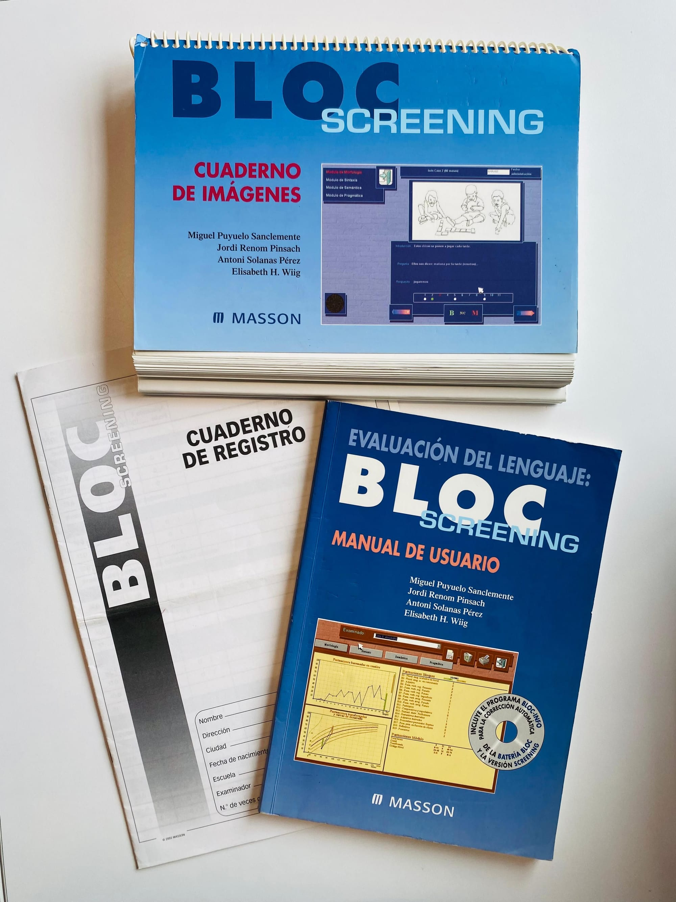
Numeración en el Laboratorio: 25
26. 16PF Fifth Edition, Administrator's Manual
Año de edición: 2000
Constructo a Evaluar: Personalidad a partir de los 16 años.
Propósito: quinta edición:Evalúa 16 rasgos primarios de personalidad.
Autores: R. B. Cattell, A. K. S. Cattell y H. E. P.
Aplicación: Individual
Duración: Variable, entre 40 y 45 minutos.
Edad: Adolescentes y adultos.
Semidigital: Manual de aplicación (físico) /Tarjeta de usos electrónico (digital).
Constructo a Evaluar: Personalidad a partir de los 16 años.
Propósito: quinta edición:Evalúa 16 rasgos primarios de personalidad.
Autores: R. B. Cattell, A. K. S. Cattell y H. E. P.
Aplicación: Individual
Duración: Variable, entre 40 y 45 minutos.
Edad: Adolescentes y adultos.
Semidigital: Manual de aplicación (físico) /Tarjeta de usos electrónico (digital).
PRUEBA SEMIDIGITAL
Numeración en el Laboratorio: 26
27. AECS- Actitudes y Estrategias Cognitivas Sociales
Año de edición: 2004
Constructo a Evaluar: Actitudes sociales y estrategias cognitivas en la interacción interpersonal.
Propósito: Actitudes y Estrategias Cognitivas Sociales: Mide actitudes sociales y estrategias cognitivas en adolescentes.
Autores: Moraleda, M., González, A. & García-Gallo, J.
Aplicación: Individual o colectiva
Duración: 30 – 40 minutos.
Edad: 12 a 18 años aproximadamente.
Constructo a Evaluar: Actitudes sociales y estrategias cognitivas en la interacción interpersonal.
Propósito: Actitudes y Estrategias Cognitivas Sociales: Mide actitudes sociales y estrategias cognitivas en adolescentes.
Autores: Moraleda, M., González, A. & García-Gallo, J.
Aplicación: Individual o colectiva
Duración: 30 – 40 minutos.
Edad: 12 a 18 años aproximadamente.
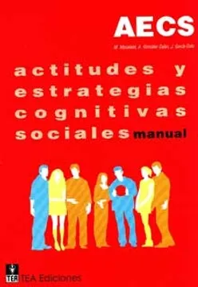
Numeración en el Laboratorio: 27
Neuropsicológicas
37. CARAS- Percepción de Diferencias
Año de edición: 2019
Constructo a Evaluar Percepción visual.
Propósito: evalúa la capacidad para detectar diferencias visuales, útil para valorar la atención y la percepción visual.
Autores: L. L. Thurstone y M. Yela
Aplicación: Individual y Colectiva.
Duración: 3 Minutos
Edad: De los 6 a los 18 años.
Adultos con problemas psiquiátricos
Constructo a Evaluar Percepción visual.
Propósito: evalúa la capacidad para detectar diferencias visuales, útil para valorar la atención y la percepción visual.
Autores: L. L. Thurstone y M. Yela
Aplicación: Individual y Colectiva.
Duración: 3 Minutos
Edad: De los 6 a los 18 años.
Adultos con problemas psiquiátricos
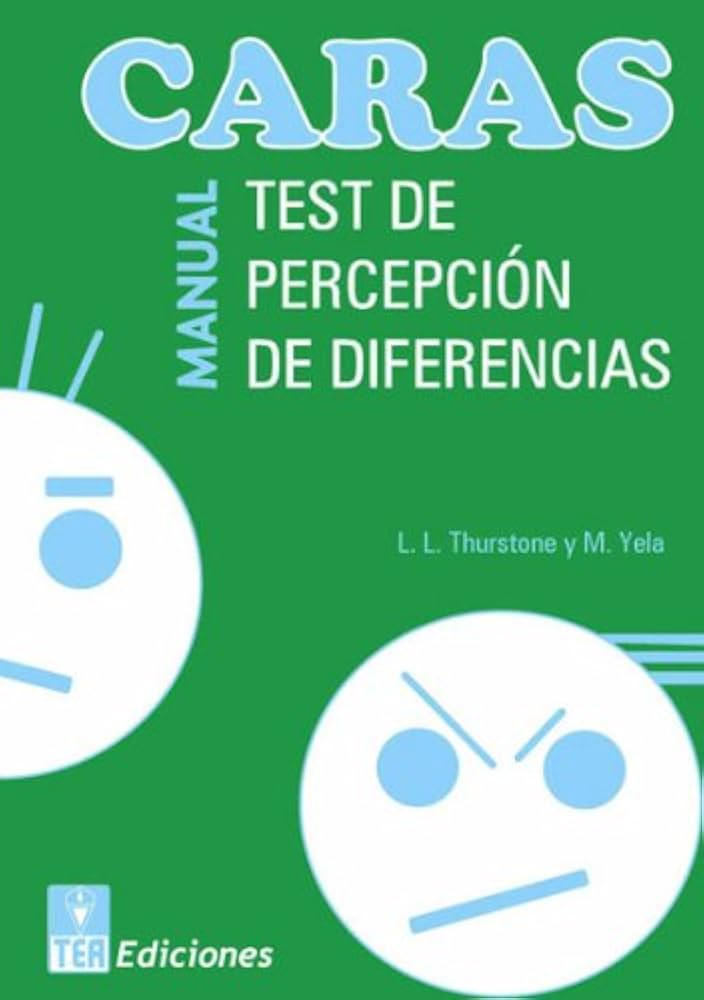
Numeración en el Laboratorio: 37
38. Figuras del Rey
Año de edición: 1997
Constructo a Evaluar: Trastornos neuropsicológicos.
Propósito: test para analizar habilidades cognitivas y motoras a través de la reproducción de figuras complejas.
Autores: A. Rey
Aplicación: Individual
Duración: 10 Minutos Aproximadamente
Edad: De 4 a 15 años
Constructo a Evaluar: Trastornos neuropsicológicos.
Propósito: test para analizar habilidades cognitivas y motoras a través de la reproducción de figuras complejas.
Autores: A. Rey
Aplicación: Individual
Duración: 10 Minutos Aproximadamente
Edad: De 4 a 15 años
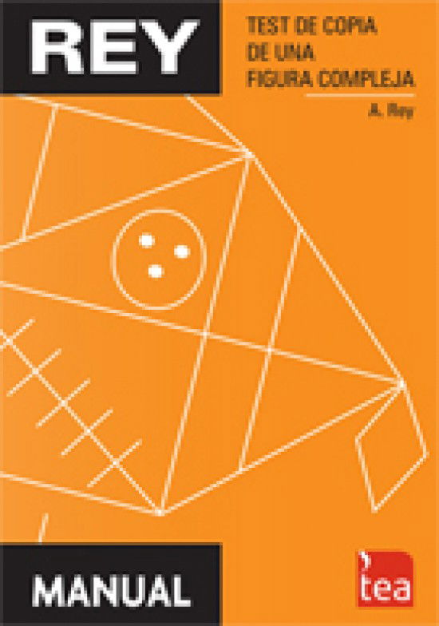
Numeración en el Laboratorio: 38
39. Test de Boston para el diagnóstico de la Afasia
Año de edición: 1998
Constructo a Evaluar: Sindrome afásico.
Propósito: evalúa trastornos del lenguaje causados por daño cerebral.
Autores: H. Godglass y E. Kaplan
Aplicación: Individual
Duración: variable
Edad: A partir de 5 años y adultos normales.
Constructo a Evaluar: Sindrome afásico.
Propósito: evalúa trastornos del lenguaje causados por daño cerebral.
Autores: H. Godglass y E. Kaplan
Aplicación: Individual
Duración: variable
Edad: A partir de 5 años y adultos normales.
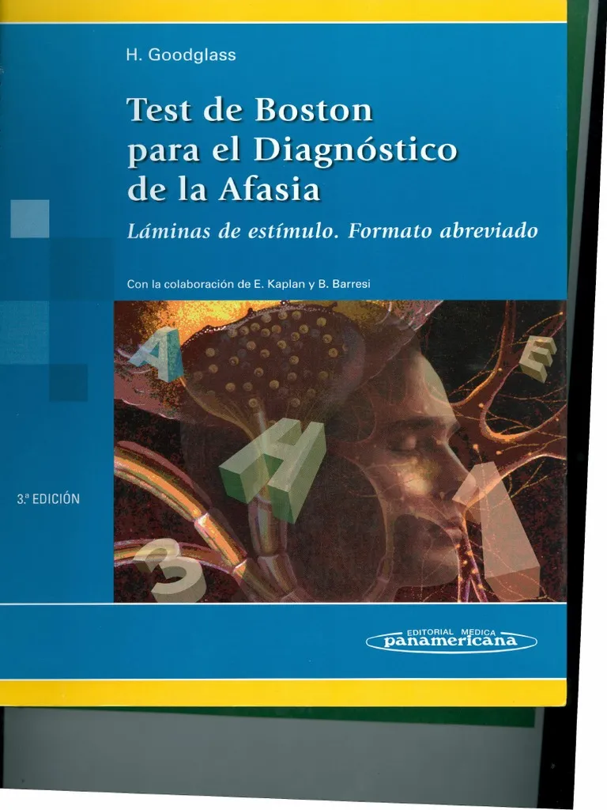
Numeración en el Laboratorio: 39
40. Test de memoria (MY)
Año de edición: 1998
Constructo a Evaluar: Memoria inmediata (de tipo gráfico, de palabras, números y relatos)
Propósito: mide diversos aspectos de la memoria a corto y largo plazo, incluyendo la memoria inmediata, la capacidad para recordar palabras, números y relatos, así como la memoria narrativa y detallada de hechos, edades y fechas. Evalúa la capacidad para almacenar, recuperar y reconocer información presentada verbal o visualmente, proporcionando una visión integral del funcionamiento de diferentes tipos de memoria.
Autores: Carlos Yuste Hernanz.
Aplicación: Individual y colectiva.
Duración: Variable, según el curso escolar y el Nivel aplicado.
Aplicación: Cursos escolares de Primaria y ESO.
Constructo a Evaluar: Memoria inmediata (de tipo gráfico, de palabras, números y relatos)
Propósito: mide diversos aspectos de la memoria a corto y largo plazo, incluyendo la memoria inmediata, la capacidad para recordar palabras, números y relatos, así como la memoria narrativa y detallada de hechos, edades y fechas. Evalúa la capacidad para almacenar, recuperar y reconocer información presentada verbal o visualmente, proporcionando una visión integral del funcionamiento de diferentes tipos de memoria.
Autores: Carlos Yuste Hernanz.
Aplicación: Individual y colectiva.
Duración: Variable, según el curso escolar y el Nivel aplicado.
Aplicación: Cursos escolares de Primaria y ESO.
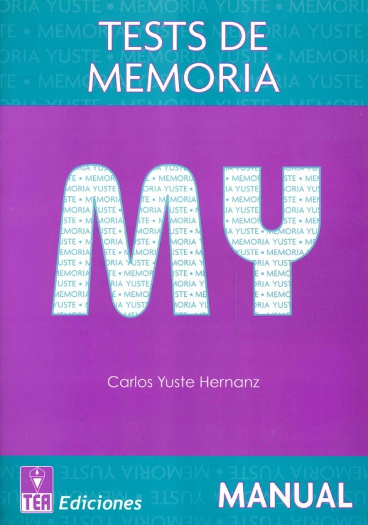
Numeración en el Laboratorio: 40
41. CUMANIN- Cuestionario de Madurez Neuropsicológica infantil
Año de edición: 2000
Constructo a Evaluar: Posibles trastornos madurativos.
Propósito: Cuestiónario de Madurez Neuropsicológica Infantil y evaluación de desarrollo neuropsicológico en niños.
Autores: J. A. Portellano, R. Mateos, R. Martinez Arias, Ma .J. Granados y A. Tapia.
Aplicación: Individual
Duración: 30 a 50 Minutos
Edad: De 3 a 6 Años
Constructo a Evaluar: Posibles trastornos madurativos.
Propósito: Cuestiónario de Madurez Neuropsicológica Infantil y evaluación de desarrollo neuropsicológico en niños.
Autores: J. A. Portellano, R. Mateos, R. Martinez Arias, Ma .J. Granados y A. Tapia.
Aplicación: Individual
Duración: 30 a 50 Minutos
Edad: De 3 a 6 Años

Numeración en el Laboratorio: 41
42. IDARE- Inventario de ansiedad: Rasgo / estado.
Año de edición: 1970
Constructo a Evaluar: La ansiedad como estado transitorio y como rasgo de personalidad estable, en sus manifestaciones cognitivas, emocionales y fisiológicas.
Propósito: inventario de Ansiedad Rasgo/Estado : Similar al STAI, mide ansiedad actual y predis posición.
Propósito: inventario de Ansiedad Rasgo/Estado : Similar al STAI, mide ansiedad actual y predis posición.
Autores: Charles D. Spielberger, R.L. Gorsuch y R.E. Lushene.
Aplicación: Individual o Colectiva
Aplicación: Individual o Colectiva
Duración de la prueba: 20 a 30 minutos.
Edad: A partir de los 16 años.
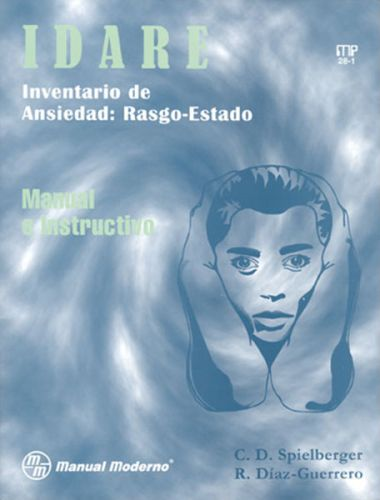
Numeración en el Laboratorio: 42
43. DCS- Prueba neuropsicológica de memoria y aprendizaje Visual
Año de edición: 2002
Constructo a Evaluar: Memoria y aprendizaje.
Propósito: prueba neuropsicológica de Memoria y Aprendizaje Visual : Evaluación de memoria visual y capacidad de aprendizaje.
Autores: Georg Lamberti, Sigrid Weidlich.
Aplicación: Individual
Edad: Personas de cualquier edad.
Constructo a Evaluar: Memoria y aprendizaje.
Propósito: prueba neuropsicológica de Memoria y Aprendizaje Visual : Evaluación de memoria visual y capacidad de aprendizaje.
Autores: Georg Lamberti, Sigrid Weidlich.
Aplicación: Individual
Edad: Personas de cualquier edad.
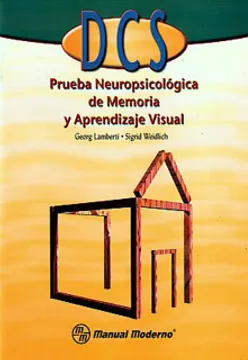
Numeración en el Laboratorio: 43
44. EDAH- Escala para la Evaluación del Trastorno por Déficis de Atención con Hiperactividad.
Año de edición: 1998
Constructo a Evaluar: El Trastorno por Déficit de Atención con Hiperactividad (TDAH) y sus dimensiones nucleares.
Propósito: Escala para Evaluación del Trastorno por Déficit de Atención con Hiperactividad - es una escala de autoinforme que permite detectar la presencia de síntomas característicos del TDAH en niños, evaluando aspectos como hiperactividad, déficit de atención e impulsividad, facilitando la identificación de subtipos del trastorno para un diagnóstico más preciso y seguimiento clínico.
Constructo a Evaluar: El Trastorno por Déficit de Atención con Hiperactividad (TDAH) y sus dimensiones nucleares.
Propósito: Escala para Evaluación del Trastorno por Déficit de Atención con Hiperactividad - es una escala de autoinforme que permite detectar la presencia de síntomas característicos del TDAH en niños, evaluando aspectos como hiperactividad, déficit de atención e impulsividad, facilitando la identificación de subtipos del trastorno para un diagnóstico más preciso y seguimiento clínico.
Autores: Farré, A. y Narbona, J.
Aplicación: Individual, a través del reporte de padres y/o profesores.
Duración : 10 a 15 minutos..
Edad: 6 a 12 años
Aplicación: Individual, a través del reporte de padres y/o profesores.
Duración : 10 a 15 minutos..
Edad: 6 a 12 años
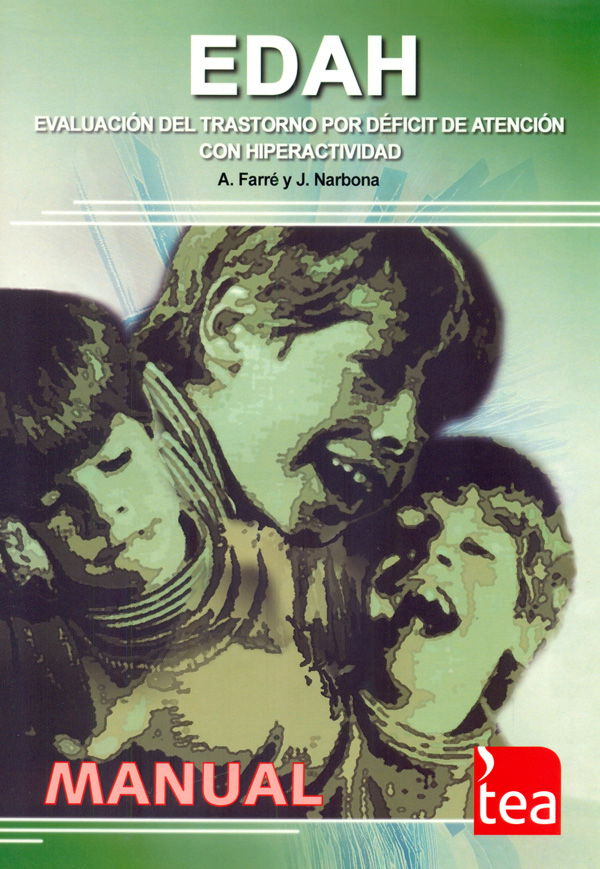
Numeración en el Laboratorio: 44
45. NEUROPSI- Evaluación breve en español
Año de edición: 2019
Constructo a Evaluar: Atención, memoria, lenguaje entre otros.
Propósito: evaluación breve en español: Batería para medir atención, memoria , lenguaje y funciones ejecutivas.
Autor: Ostrosky-Solis, F, Ardila, A., & Rosselli, M. Aplicación: Individual
Duración: Alrededor de 40 minutos.
Edad: 16 a 85 años
Constructo a Evaluar: Atención, memoria, lenguaje entre otros.
Propósito: evaluación breve en español: Batería para medir atención, memoria , lenguaje y funciones ejecutivas.
Autor: Ostrosky-Solis, F, Ardila, A., & Rosselli, M. Aplicación: Individual
Duración: Alrededor de 40 minutos.
Edad: 16 a 85 años
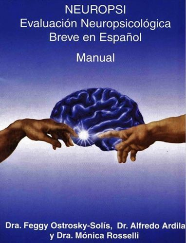
Numeración en el Laboratorio 45
46. WISC IV- Escala de Weschler de inteligencia para Niños
Año de edición: 2014
Constructo a Evaluar: Inteligencia en niños
Autores: D. Wechsler
Aplicación: Individual
Duración: De 50 minutos a 1 hora.
Edad: De 6 años a 16 años y 11 meses.
Constructo a Evaluar: Inteligencia en niños
Autores: D. Wechsler
Aplicación: Individual
Duración: De 50 minutos a 1 hora.
Edad: De 6 años a 16 años y 11 meses.
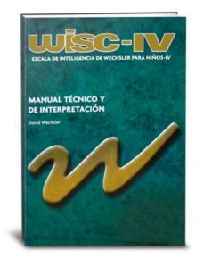
Numeración en el Laboratorio: 46
47. Escala MCCARTHY de aptitudes y psicomotricidad para niños
Año de edición: 2006
Constructo a Evaluar: Habilidades.
Propósito: mide aptitudes cognitivas y psicomotrices en niños.
Propósito: mide aptitudes cognitivas y psicomotrices en niños.
Autores: Dorothea McCarthy.
Aplicación: Individual.
Edades: 2 años y medio a 8 años y medio. Con niños pequeños (menos de 5 años) es aproximadamente de 45 a 50 minutos. Con los niños mayores es de alrededor de 1 hora.

Numeración en el laboratorio: 47
48. BANPE- Batería neuropsicológica para prescolares
Año de edición: 2006
Constructo a Evaluar: Neuropsicología en preescolares.
Propósito: batería neuropsicológica para preescolares : Evalúa funciones cognitivas en primera infancia.
Autores: Feggy Ostrosky Shejet, Asucena Lozano Gutierrez, Maria Guadalupe Gonzalez Osornio.
Aplicación: Individual
Edad: De 3 años a 5 años y 11 meses.
Constructo a Evaluar: Neuropsicología en preescolares.
Propósito: batería neuropsicológica para preescolares : Evalúa funciones cognitivas en primera infancia.
Autores: Feggy Ostrosky Shejet, Asucena Lozano Gutierrez, Maria Guadalupe Gonzalez Osornio.
Aplicación: Individual
Edad: De 3 años a 5 años y 11 meses.
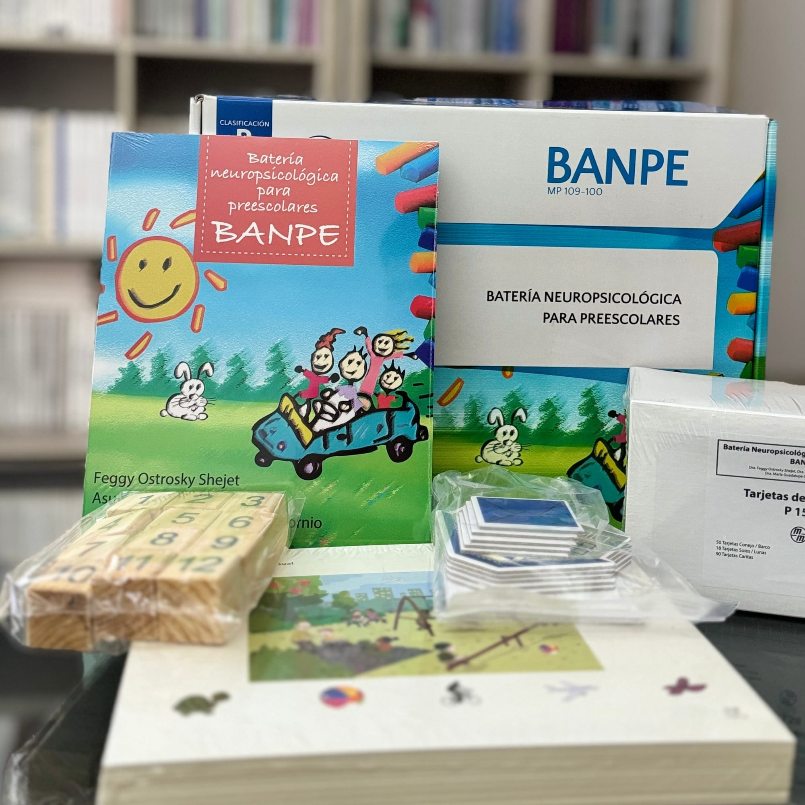
Numeración en el Laboratorio: 48
49. ENI- Evaluación Neuropsicológica Infantil
Año de edición: 2007
Constructo a Evaluar: Neuropsicología integral en niños de 5 a 16 años.
Propósito: evalúa desarrollo neuropsicológico integral en niños y adolescentes.
Autores: Matute, E.; Rosselli, M.; Ardila, A. & Ostrosky-Solís, F. Aplicación: Individual
Duración: 3 horas aproximadamente
Edad: De 5 a 16 años
Constructo a Evaluar: Neuropsicología integral en niños de 5 a 16 años.
Propósito: evalúa desarrollo neuropsicológico integral en niños y adolescentes.
Autores: Matute, E.; Rosselli, M.; Ardila, A. & Ostrosky-Solís, F. Aplicación: Individual
Duración: 3 horas aproximadamente
Edad: De 5 a 16 años
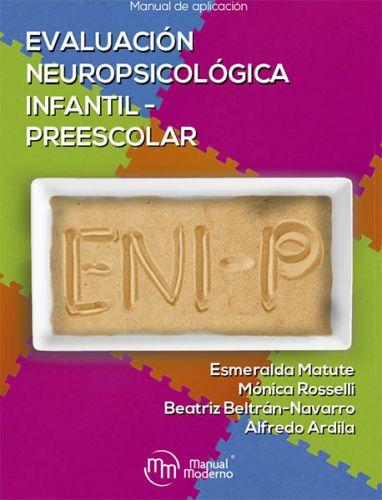
Numeración en el Laboratorio: 49
50. WAIS Escala de inteligencia Weschler para adulto
Año de edición: 1981
Constructo a Evaluar: Inteligencia en adultos
En la actualidad, también está disponible en el laboratorio la versión WAIS IV (2014).
Propósito: evalúa inteligencia general y sub funciones cognitivas .
Constructo a Evaluar: Inteligencia en adultos
En la actualidad, también está disponible en el laboratorio la versión WAIS IV (2014).
Propósito: evalúa inteligencia general y sub funciones cognitivas .
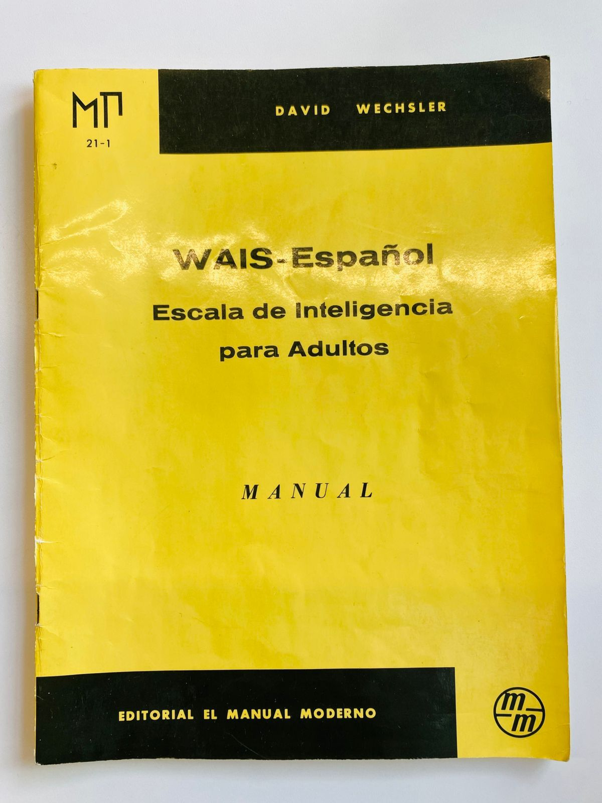
Numeración en el Laboratorio: 50
51. BETA-III
Año de edición: 1999
Constructo a evaluar: evalúa las habilidades cognitivas no lingüísticas de un individuo, como el razonamiento espacial, la velocidad de procesamiento y la inteligencia fluida.
Propósito: batería para evaluación cognitiva general.
Propósito: batería para evaluación cognitiva general.
Autores: C. E. Kellog, N. W. Morton
Aplicación: Individual o colectiva
Duración estimada: 25 y 30 minutos
Edad recomendada: 16 años hasta los 89 años
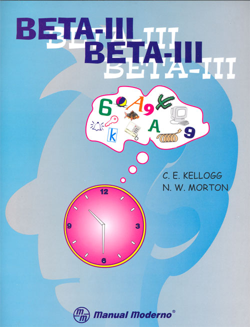
Numeración en el Laboratorio: 51
52. BANFE 3- Batería neuropsicológica de funciones ejecutivas y lóbulos frontales.
Año de edición: 2020
Constructo a Evaluar: evalúa el conjunto de procesos cognitivos superiores que regulan la conducta, el pensamiento y la emoción.
Propósito: batería neuro psicológica de funciones ejecutivas y lóbulos frontales: Mide funciones ejecutivas.
Propósito: batería neuro psicológica de funciones ejecutivas y lóbulos frontales: Mide funciones ejecutivas.
Autores: Julio César Flores Lázaro, Feggy Ostrosky Shejet y Azucena Lozano Gutiérrez
Aplicación: Individual.
Duración de la prueba: Entre 50 y 60 minutos aproximadamente
Edad: 6 a 90 años
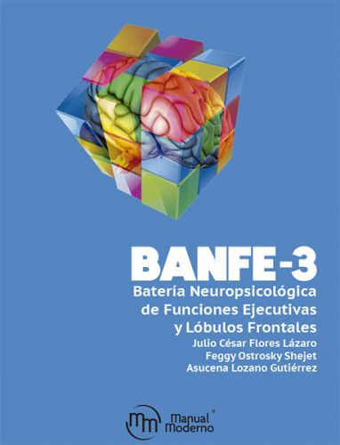
Numeración en el Laboratorio: 52
53. NAM-NEURO-NEUROPSI Atención y Memoria
Año de edición: 2019
Constructo a Evaluar: funciones cognitivas.
Propósito: evaluación específica de atención y memoria.
Autores: Ostrosky-Solis, Feggy; Ardila, Alfredo; Rosselli, Mónica.
Aplicación: Individual.
Tiempo: 20 Minutos aproximadamente.
Edad: De 6 a 85 años Personas con o sin trastorno cognitivo.
Constructo a Evaluar: funciones cognitivas.
Propósito: evaluación específica de atención y memoria.
Autores: Ostrosky-Solis, Feggy; Ardila, Alfredo; Rosselli, Mónica.
Aplicación: Individual.
Tiempo: 20 Minutos aproximadamente.
Edad: De 6 a 85 años Personas con o sin trastorno cognitivo.
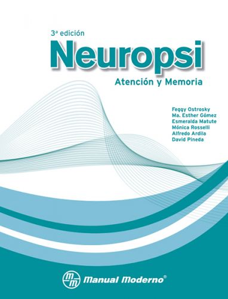
Numeración en el Laboratorio: 53
54. TONI 4 - Test de Inteligencia No Verbal
Año de edición: 2019
Constructo a Evaluar: Inteligencia no verbal.
Propósito: evalúa inteligencia sin requerir lenguaje.
Autores: L. Brown, R. J. Sherbenov y S. K. Johnsen.
Aplicación: Individual.
Duración: 15 minutos cada una de las formas.
Edad: 6 a 79 años.
Semidigital: Manual de aplicación (físico) / Tarjeta de usos electrónico (digital)
Constructo a Evaluar: Inteligencia no verbal.
Propósito: evalúa inteligencia sin requerir lenguaje.
Autores: L. Brown, R. J. Sherbenov y S. K. Johnsen.
Aplicación: Individual.
Duración: 15 minutos cada una de las formas.
Edad: 6 a 79 años.
Semidigital: Manual de aplicación (físico) / Tarjeta de usos electrónico (digital)
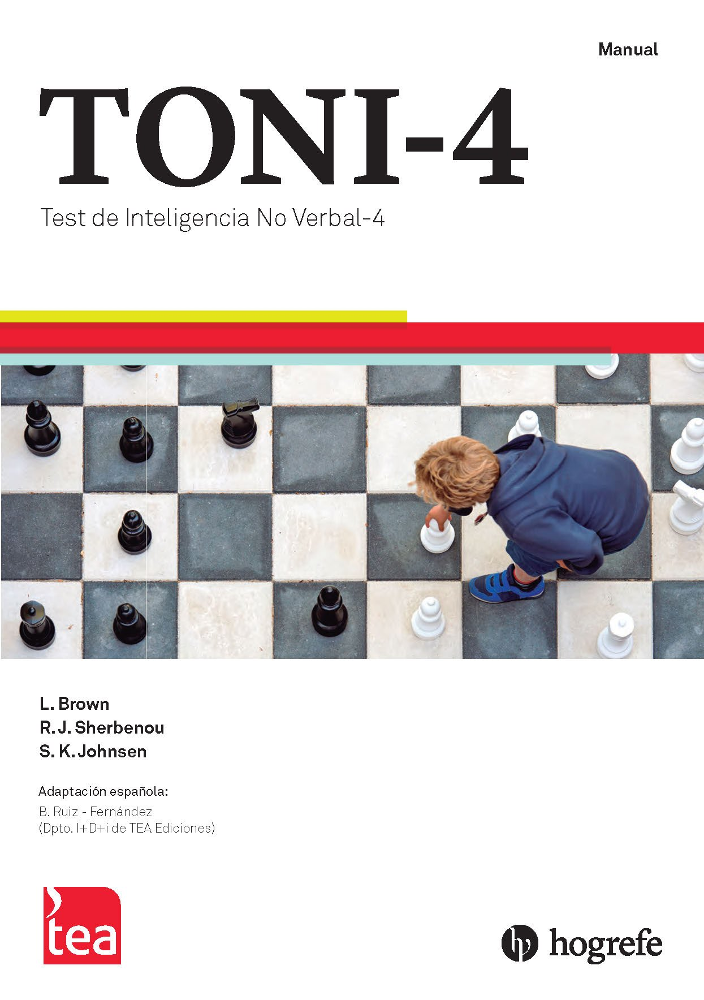
PRUEBA SEMIDIGITAL
Numeración en el Laboratorio: 54
55. BRIEF 2- Evaluación conductual de la función Ejecutiva.
Año de edición: 2017
Constructo a Evaluar: Evalúa el funcionamiento ejecutivo en la vida diaria.
Propósito: mide aspectos conductuales relacionados con funciones ejecutivas.
Propósito: mide aspectos conductuales relacionados con funciones ejecutivas.
Autores: Gerard A. Gioia, Peter K. Isquith, Steven C. Guy y Lauren Kenworthy.
Aplicación: Individual, mediante cuestionarios de autorreporte y de heteroevaluación (padres, profesores y, en algunos casos, el propio adolescente).
Duración de la prueba: 10 a 15 minutos para responder cada formulario.
Edad: Niños y adolescentes de 5 a 18 años.
Duración de la prueba: 10 a 15 minutos para responder cada formulario.
Edad: Niños y adolescentes de 5 a 18 años.
Semidigital: Manual de aplicación (físico) / Tarjeta de usos electrónico (digital)
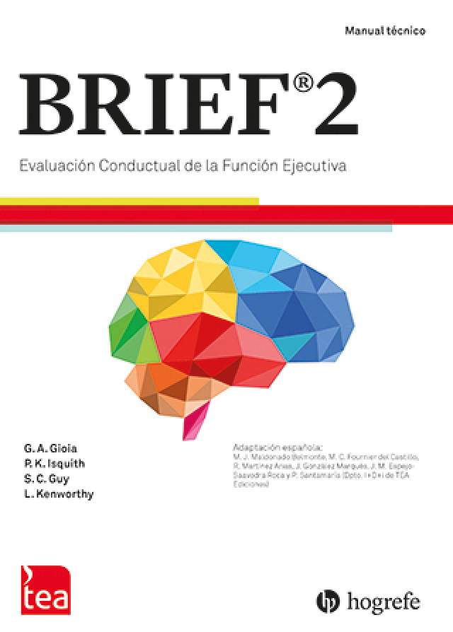
PRUEBA SEMIDIGITAL
Numeración en el Laboratorio: 55
56. WAIS-IV Escala de inteligencia Weschler para Adultos
Año de edición: 2014
Constructo a Evaluar: Inteligencia en adultos.
Propósito: evaluación de inteligencia general, incluyendo memoria y atención.
Autores: D. Wechsler
Aplicación: Individual
Tiempo: De 1 hora a 50
Edad: De 16 a 89 años de edad.
Constructo a Evaluar: Inteligencia en adultos.
Propósito: evaluación de inteligencia general, incluyendo memoria y atención.
Autores: D. Wechsler
Aplicación: Individual
Tiempo: De 1 hora a 50
Edad: De 16 a 89 años de edad.
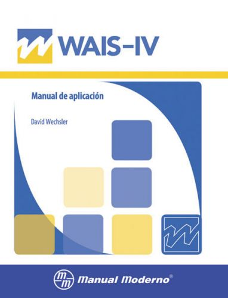
Numeración en el laboratorio: 56
57. ABC- Batería de evaluación de Kaufman para niños.
Año de edición: 1997
Constructo a Evaluar: Evalúa habilidades.
Propósito: evalúa inteligencia y habilidades cognitivas.
Autores: Alan S. Kaufman y Nadeen L. Kaufman.
Aplicación: Individual
Duración de la prueba: Entre 35 y 85 minutos
Edad: Niños y adolescentes de 2 años y medio a 12 años y medio
Propósito: evalúa inteligencia y habilidades cognitivas.
Autores: Alan S. Kaufman y Nadeen L. Kaufman.
Aplicación: Individual
Duración de la prueba: Entre 35 y 85 minutos
Edad: Niños y adolescentes de 2 años y medio a 12 años y medio
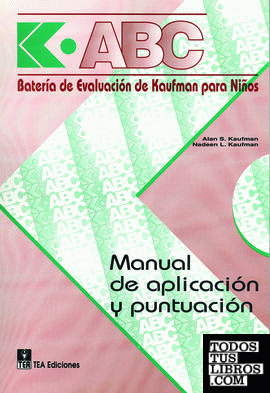
Numeración en el Laboratorio: 57
58. ADI-R Entrevista para Diagnostico del Autismo- Edición Revisada
Año de edición: 2024
Constructo a Evaluar: Los comportamientos nucleares del Trastorno del Espectro Autista (TEA).
Propósito: entrevista estructura urada para diagnóstico del espectro autista.
Autores: Michael Rutter, Ann LeCouteur y Catherine Lord.
Aplicación: Individual
Duración de la prueba: Entre 90 y 150 minutos.
Edad: Niños y adultos con sospecha de Trastorno del Espectro Autista (TEA), con edad mental superior a los 2 años.
Propósito: entrevista estructura urada para diagnóstico del espectro autista.
Autores: Michael Rutter, Ann LeCouteur y Catherine Lord.
Aplicación: Individual
Duración de la prueba: Entre 90 y 150 minutos.
Edad: Niños y adultos con sospecha de Trastorno del Espectro Autista (TEA), con edad mental superior a los 2 años.
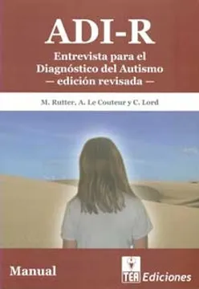
Numeración en el Laboratorio: 58
59. WISC-R de Weschler de inteligencia para Niños
Año de edición: 1999
Constructo a Evaluar: Inteligencia en niños.
Propósito: versiones anteriores y para prees colar de la escala Wechsler para población prescolar.
Autores: D. Wechsler
Aplicación: Individual.
Duración: Variable, entre 60 y 90 minutos.
Edad: Niños de 6 a 16 años.
Constructo a Evaluar: Inteligencia en niños.
Propósito: versiones anteriores y para prees colar de la escala Wechsler para población prescolar.
Autores: D. Wechsler
Aplicación: Individual.
Duración: Variable, entre 60 y 90 minutos.
Edad: Niños de 6 a 16 años.
Numeración en el Laboratorio: 59
60. WPPSI - Escala de Weschler para Preescolar y Primaria
Año de edición: 2007
Constructo a Evaluar: Inteligencia de preescolares y niños en edad escolar.
Autores: David Wechsler
Aplicación: Individual.
Duración: Variable, entre 60 y 90 minutos.
Edad: Niños de 4 a 6 1/2 años.
Constructo a Evaluar: Inteligencia de preescolares y niños en edad escolar.
Autores: David Wechsler
Aplicación: Individual.
Duración: Variable, entre 60 y 90 minutos.
Edad: Niños de 4 a 6 1/2 años.
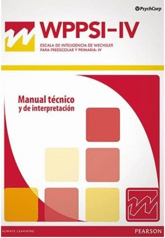
Numeración en el Laboratorio: 60
61. Método de evaluación de percepción visual de Frostig (DTVP-2)
Año de edición: 1997
Constructo a Evaluar: Test de desarrollo perceptivo-visual.
Propósito: evalúa habilidades perceptivo-vis uales.
Autores: Marianne Frostig, Phyllis Lefever y John Whittlesey.
Aplicación: Individual
Duración de la prueba: Entre 30 y 60 minutos.
Edad: Niños de 4 a 10 años, 11 meses.
Propósito: evalúa habilidades perceptivo-vis uales.
Autores: Marianne Frostig, Phyllis Lefever y John Whittlesey.
Aplicación: Individual
Duración de la prueba: Entre 30 y 60 minutos.
Edad: Niños de 4 a 10 años, 11 meses.
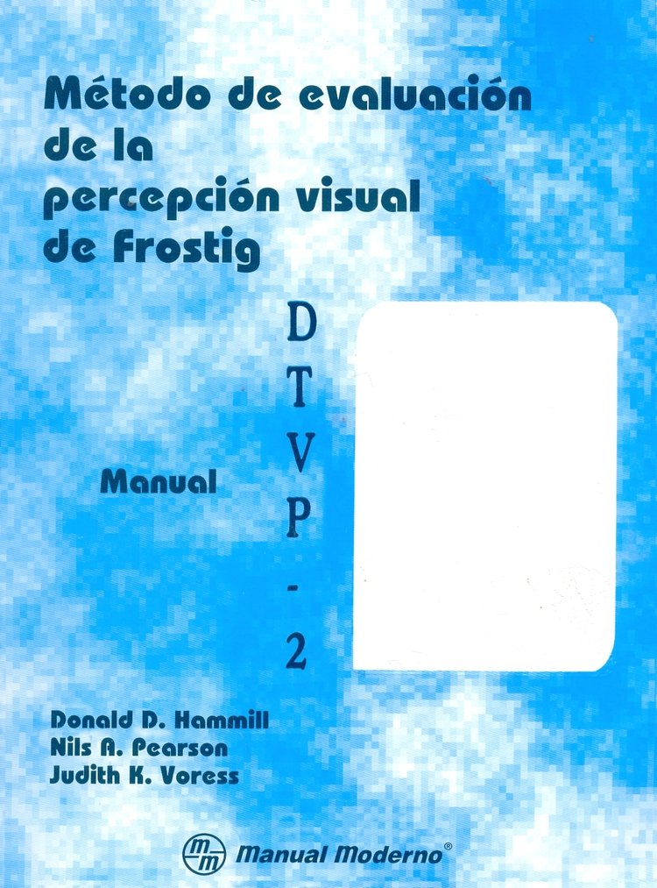
Numeración en el Laboratorio: 61
62. Estudio de Valores de Allport
Año de edición: 2001
Constructo a Evaluar: La jerarquía de valores personales que orientan la conducta, intereses y motivaciones del individuo, clasificados en seis dimensiones: teórico, económico, estético, social, político y religioso.
Propósito: evalúa valores personales.
Autores: Gordon W. Allport, Philip E. Vernon y Gardner Lindzey.
Aplicación: Individual o colectiva, en formato papel-lápiz.
Duración de la prueba: Entre 20 y 30 minutos.
Edad: Adolescentes y adultos.
Propósito: evalúa valores personales.
Autores: Gordon W. Allport, Philip E. Vernon y Gardner Lindzey.
Aplicación: Individual o colectiva, en formato papel-lápiz.
Duración de la prueba: Entre 20 y 30 minutos.
Edad: Adolescentes y adultos.
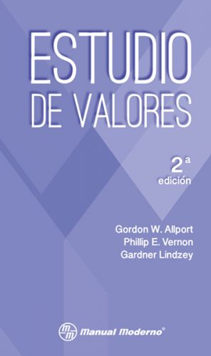
Numeración en el Laboratorio: 62
63. RIAS y RIST- Escala de inteligencia de Reynoland y Test de Inteligencia breve de Reynoland
Año de edición: 2016
Constructo a Evaluar: Escala de inteligencia general y memoria.
Propósito: pruebas breves de inteligencia.
Autores: Cecil R. Reynolds y Randy W. Kamphaus.
Aplicación: Individual
Duración de la prueba: 40 a 50 minutos.
Edad: 3 a 94 años.
Propósito: pruebas breves de inteligencia.
Autores: Cecil R. Reynolds y Randy W. Kamphaus.
Aplicación: Individual
Duración de la prueba: 40 a 50 minutos.
Edad: 3 a 94 años.
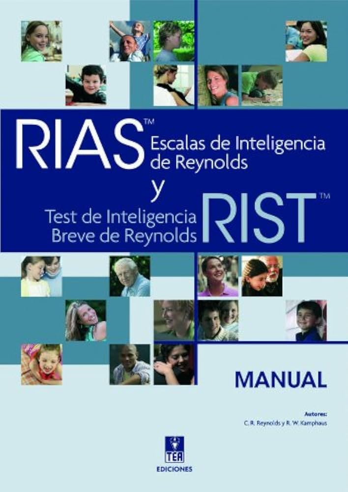
Numeración en el Laboratorio: 63
64. BANETA- Batería Neuropsicológica para la evaluación de los Trastornos del Aprendizaje
Año de edición: 2023
Constructo a Evaluar: Evalúa de manera analítica las funciones neuropsicológicas relacionadas con el aprendizaje, identificando las áreas de dificultad específicas en lectura, escritura y cálculo mediante un perfil detallado.
Propósito: evalúa dificultades específicas en el aprendizaje.
Autores: María Guillermina Yáñez Téllez y Belén Prieto.
Aplicación: Individual
Duración de la prueba: Aproximadamente 3 horas, que pueden aplicarse en dos sesiones de 90 minutos o incluso tres sesiones de una hora.
Edad: Niños en edad escolar de 7 años a 11 años 11 meses.
Propósito: evalúa dificultades específicas en el aprendizaje.
Autores: María Guillermina Yáñez Téllez y Belén Prieto.
Aplicación: Individual
Duración de la prueba: Aproximadamente 3 horas, que pueden aplicarse en dos sesiones de 90 minutos o incluso tres sesiones de una hora.
Edad: Niños en edad escolar de 7 años a 11 años 11 meses.

Numeración en el Laboratorio: 64
Educativas
74. AVE - acoso y violencia escolar
Año de edición: 2006
Constructo a Evaluar: Maltrato escolar y sus consecuencias.
Propósito: evalúa dinámicas de acoso y violencia en el entorno escolar.
Propósito: evalúa dinámicas de acoso y violencia en el entorno escolar.
Autores: Iñaki Piñuel y Zabala y Araceli Oñate Cantero.
Aplicación: Individual o Colectiva
Aplicación: Individual o Colectiva
Duración de la prueba: Variable, de 25 a 35 minutos.
Edad: Diseñada para niños y adolescentes entre 8 y 18 años
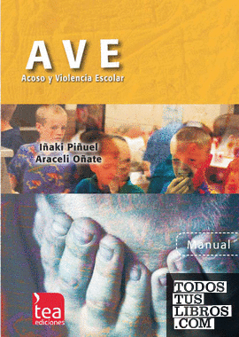
Numeración en el Laboratorio: 74
75. KV-KUDER escala de Preferencia Vocacional Q-DER
Año de edición: 2001
Constructo a Evaluar: Intereses vocacionales.
Propósito: permite identificar preferencias profesionales para orientar la elección de carrera.
Propósito: permite identificar preferencias profesionales para orientar la elección de carrera.
Autores: Kuder, George Frederic
Aplicación: Individual y Colectivamente.
Duración de la prueba: 30 a 60 minutos
Edad:A partir de los 15 años, sin límite máximo (adolescentes y adultos).
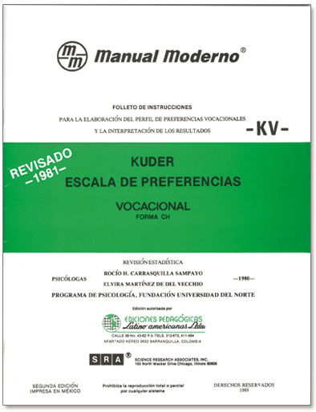
Numeración en el Laboratorio: 75
76. ACE - Alteración del Comportamiento en la Escuela.
Año de edición: 2006
Constructo a Evaluar: Desviaciones conductuales en las aulas
Autores: Alfredo Arias Pérez, Luis Miguel Ayuso Escuer, Guillermo Gil Escudero e Inmaculada González Báez Aplicación: Individual para el alumno, con valoración múltiple del profesorado (se aconseja que, para incrementar la validez de la prueba, se realice una triangulación de jueces, con al menos la participación de tres maestros de los que imparten habitualmente clases al alumno).
Duración de la prueba: Variable, aproximadamente 20 minutos.
Edad: Edades entre 3 y 13 años.

Numeración en el Laboratorio: 76
77. AEP - Cuestionario para la evaluación de la Autoestima en la educación primaria
Año de edición: 2006
Constructo a Evaluar: Autoestima en los niños.
Propósito: permite medir y comprender el nivel de autoestima infantil para orientar intervenciones y apoyos adecuados.
Propósito: permite medir y comprender el nivel de autoestima infantil para orientar intervenciones y apoyos adecuados.
Autores: Ramos, R.; Giménez, A.I.; Muñoz-Adell, M.A.; Lapaz, E.
Aplicación: Individual y Colectiva.
Duración de la prueba: La aplicación dura hasta 10 minutos (15 en grupo) y su corrección toma unos 5 minutos.
Edad: Desde los 9 años hasta los 13
Aplicación: Individual y Colectiva.
Duración de la prueba: La aplicación dura hasta 10 minutos (15 en grupo) y su corrección toma unos 5 minutos.
Edad: Desde los 9 años hasta los 13

Numeración en el Laboratorio: 77
78. RP30- Resolución de Problemas
Año de edición: 2002
Constructo a Evaluar: Aspectos no verbales de la inteligencia.
Propósito: mide habilidades para resolver problemas.
Propósito: mide habilidades para resolver problemas.
Autores: N. Seisdedos Dpto. I+D+I de Tea Ediciones
Aplicación: Individual o Colectiva
Aplicación: Individual o Colectiva
Duración de la prueba: 17 Minutos
Edad: Adolescentes y adultos
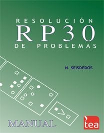
Numeración en el Laboratorio: 78
79. Facilito Evaluación de precurrentes instrumentales para la adquisición dela lectoescritura - B
Año de Edición: 2002
Constructo a Evaluar: habilidades instrumentales precursoras del aprendizaje de la lectoescritura.
Propósito: evaluar las habilidades básicas necesarias para un adecuado aprendizaje de la lectura y escritura en primera infancia.
Propósito: evaluar las habilidades básicas necesarias para un adecuado aprendizaje de la lectura y escritura en primera infancia.
Autores: Teresa Fuentes Navarro
Aplicación: Individual o grupal.
Duración de la prueba: 45 minutos.
Edad: 4 a 6 años.
Numeración en el Laboratorio: 79
80. DP-3 Perfil de Desarrollo
Año de edición: 2018
Constructo a Evaluar: Cognición, Motricidad, Socioemocional, Comunicación y Conducta adaptativa.
Propósito: perfil integral de desarrollo infantil.
Propósito: perfil integral de desarrollo infantil.
Autores: Gerald D. Alpern.
Aplicación: Individual.
Duración: 35 minutos, aproximadamente.
Edad: Desde los 0 años y 0 meses hasta los 12 años y 11 meses.
Semidigital: Manual de aplicación (físico) / Tarjeta de usos electrónico (digital)
PRUEBA SEMIDIGITAL
Numeración en el Laboratorio: 80
81. IHE - Inventario de Hábitos de Estudio
Año de edición: 2002.
Constructo a Evaluar: Hábitos de Estudio
Autores: TEA Ediciones,1981.
Aplicación: Individual y colectiva.
Duración de la prueba: 15 minutos, aproximadamente, incluyendo la aplicación y corrección.
Edad: De 12 años en adelante
Numeración en el Laboratorio: 81
82. BEDPAEC- Batería de evaluación dinámica del potencial de aprendizaje
Año de edición: 1993
Constructo a Evaluar: potencial de aprendizaje en niños, abordado de forma integral considerando diversas capacidades cognitivas.
Propósito: Evaluar de manera individual las habilidades cognitivas específicas que contribuyen al aprendizaje, para identificar fortalezas y áreas que requieren apoyo.
Propósito: Evaluar de manera individual las habilidades cognitivas específicas que contribuyen al aprendizaje, para identificar fortalezas y áreas que requieren apoyo.
Autores: Santiago Molina García, Ana Arraiz Pérez y María de los Angeles Garrido Laparte.
Aplicación: Individual
Duración de la prueba: Variable según las capacidades y habilidades del niño.
Edad: niños de 5 a 8 años, extendiéndose hasta los 12 años en casos con retraso mental.
Aplicación: Individual
Duración de la prueba: Variable según las capacidades y habilidades del niño.
Edad: niños de 5 a 8 años, extendiéndose hasta los 12 años en casos con retraso mental.

Numeración en el Laboratorio: 82
83. CUMANES- Cuestionario de Madurez Neuropsicológica Escolar
Año de edición: 2013
Constructo a Evaluar: evalúa la madurez neuropsicológica global.
Autores: J. A. Portellano, R. Mateos y R. Martínez‑Arias.
Aplicación: Individual
Duración de la prueba: 40 a 50 minutos.
Edad: 7 a 11 años.
Semidigital: Manual de aplicación (físico) / Tarjeta de usos electrónico (digital)PRUEBA SEMIDIGITAL
Numeración en el Laboratorio: 83
84. ABC - Dislexia. Programa de Lectura y Escritura
Año de Edición: 2010
Constructo a evaluar: Evalúa diferentes habilidades neuropsicológicas y lingüísticas relacionadas con el proceso lector.
Propósito: programa para detección y apoyo en dislexia.
Propósito: programa para detección y apoyo en dislexia.
Autor: Paula Outón
Aplicación: Individual y colectiva
Duración por sesión: Aproximadamente 45 minutos
Edad recomendada: A partir de los 5 años

Numeración en el Laboratorio: 84
85. PROLEC-SE. Batería para la Evaluación de los procesos Lectores en Secundaria y Bachillerato
Año de edición: 1999
Constructo a Evaluar: Procesos lectores.
Propósito: evalúa habilidades lectoras en secundaria y bachillerato.
Propósito: evalúa habilidades lectoras en secundaria y bachillerato.
Autores: F. Cuetos, D. Arribas y J. L. Ramos (Dpto. I + D + ia TEA Ediciones)
Aplicación: Individual
Duración de la prueba: 45 minutos aproximadamente la versión screening.
Edad: Adolescentes entre los 12 y 18 años
Numeración en el Laboratorio: 85
86. ERAVE - Escalas Reynolds de Acoso- Victimización para Escolares
Año de edición: 2017
Constructo a Evaluar: evalúa la presencia, participación e impacto emocional del acoso escolar en niños y adolescentes.
Propósito: mide experiencias de acoso y victimización.
Propósito: mide experiencias de acoso y victimización.
Autores: William M. Reynolds
Aplicación: individual o colectiva.
Duración: 45 minutos
Edad: 8 hasta los 18 años
Numeración en el Laboratorio: 86
87. CREA - Inteligencia Creativa
Año de edición: 2006
Constructo a Evaluar: Una medida cognitiva de la Creatividad.
Propósito: evaluar individual o colectivamente la capacidad creativa mediante una prueba breve que permita identificar potencialidades en niños, adolescentes y adultos.
Propósito: evaluar individual o colectivamente la capacidad creativa mediante una prueba breve que permita identificar potencialidades en niños, adolescentes y adultos.
Autores: F. J. Corbalán, F. Martínez, D. Donolo.
Aplicación: Individual y colectiva.
Aplicación: Individual y colectiva.
Duración de la prueba: Aproximadamente 10 minutos.
Edad: Niños, adolescentes y adultos.
Numeración en el Laboratorio: 87
88. AIDA- Inventario Autodescripción del adolescente - A
Año de Edición: 2012
Constructo a evaluar: autoconcepto multidimensional del adolescente.
Propósito: evalúa autopercepción emocional y social.
Propósito: evalúa autopercepción emocional y social.
Autores: Emilia Lucio Gómez-Maqueo, Blanca E. Barcelata Eguiarte y Consuelo Durán Patiño
Aplicación: Puede realizarse de forma individual o colectiva
Duración: Entre 30 y 35 minutos en aplicación colectiva
Edad: entre 13 y 18 años
Población: Adolescentes, de entornos urbanos y semiurbanos

Numeración en el Laboratorio: 88
89. IPP Intereses y Preferencias Profesionales
Año de edición: 1999
Constructo a Evaluar: Preferencias y motivaciones relacionadas con distintas áreas profesionales.
Propósito: medir los intereses vocacionales en adolescentes y adultos para apoyar en la toma de decisiones sobre elección profesional.
Propósito: medir los intereses vocacionales en adolescentes y adultos para apoyar en la toma de decisiones sobre elección profesional.
Autores: Mª Victoria de la Cruz López.
Aplicación: Individual o colectiva
Duración de la prueba: Variable, entre 30 y 60 minutos.
Edad: Adolescentes y adultos (a partir de 13 años).

Numeración en el Laboratorio: 89
90. CHETE-Cuestionario de Hábitos y Técnicas de estudio
Año de edición: 2015
Constructo a Evaluar: entendidos como comportamientos y métodos rutinarios que influyen en el proceso de aprendizaje.
Propósito: evaluar prácticas concretas de estudio en niños y adolescentes para diagnosticar fortalezas y áreas de mejora, con el fin de diseñar intervenciones educativas efectivas.
Propósito: evaluar prácticas concretas de estudio en niños y adolescentes para diagnosticar fortalezas y áreas de mejora, con el fin de diseñar intervenciones educativas efectivas.
Autores: M. Álvarez y R. Fernández.
Aplicación: online y papel. (Individual o colectiva)
Aplicación: online y papel. (Individual o colectiva)
Duración de la prueba: 30 minutos aproximadamente.
Edad: De 10 a 18 años.
Numeración en el Laboratorio 90
91. ACRA - Escalas de estrategias de aprendizaje
Año de edición: 1994
Constructo a Evaluar: Estrategias de aprendizaje.
Propósito: medir el uso habitual de estas estrategias en adolescentes para detectar fortalezas y necesidades de intervención educativa, facilitando la mejora del rendimiento académico.
Propósito: medir el uso habitual de estas estrategias en adolescentes para detectar fortalezas y necesidades de intervención educativa, facilitando la mejora del rendimiento académico.
Autores: María Román Sánchez y Fernando Gallego Rico.
Aplicación: Individual o Colectiva.
Duración de la prueba: Variable, entre 30 y 60 minutos.
Edad: De 12 a 18 años
Aplicación: Individual o Colectiva.
Duración de la prueba: Variable, entre 30 y 60 minutos.
Edad: De 12 a 18 años

Numeración en el Laboratorio: 91
92. SAGES-2. Evaluación inicial para estudiantes con aptitudes sobresalientes educación primaria y secundaria
Año de edición: 2003
Constructo a Evaluar: Aptitudes académicas sobresalientes.
Propósito: Identificación de talentos y habilidades especiales.
Propósito: Identificación de talentos y habilidades especiales.
Autores: Johnsen, Susan K. / Corn, Anne L.
Aplicación: Individual o Colectiva
Duración de la prueba: 1 hora 30 minutos a 2 horas 15 minutos
Edad: De 5 a 14 años 11 meses
Duración de la prueba: 1 hora 30 minutos a 2 horas 15 minutos
Edad: De 5 a 14 años 11 meses
Numeración en el Laboratorio: 92
93. MPS- Escala de motivación psicosociales
Año de edición: 1999
Constructo a Evaluar: Evaluar las motivaciones psicosociales que orientan la conducta humana en distintos contextos.
Propósito: evalúa motivación para el aprendizaje.
Propósito: evalúa motivación para el aprendizaje.
Autores: Sanz de Acedo Lizarraga, M. L., Ugarte Artal, M. D., & Lumbreras, M. (1999).
Aplicación: Individual o colectiva, en formato papel/lápiz.
Duración de la prueba: 20 – 30 minutos.
Edad: Desde los 12 años en adelante.
Duración de la prueba: 20 – 30 minutos.
Edad: Desde los 12 años en adelante.
Numeración en el Laboratorio: 93
95. EDAH - Evaluación del Déficit de Atención con Hiperactividad
Año de edición: 1998
Constructo a Evaluar: Evaluación de síntomas compatibles con TDAH y otros trastornos de conducta en niños y adolescentes, mediante la observación sistemática de comportamientos relacionados con inatención, hiperactividad e impulsividad.
Propósito: cuantificar la presencia y gravedad de los principales síntomas del TDAH según informantes clave (padres, docentes o cuidadores) en el entorno escolar, facilitando la identificación de necesidades de intervención y apoyo.
Propósito: cuantificar la presencia y gravedad de los principales síntomas del TDAH según informantes clave (padres, docentes o cuidadores) en el entorno escolar, facilitando la identificación de necesidades de intervención y apoyo.
Autores: Carles Farré i Riba y Joaquín Narbona
Aplicación: Individual (completado por padres, docentes o cuidadores)
Duración de la prueba: 10 a 15 minutos
Edad: De 6 a 12 años
Numeración en el laboratorio: 95
96. Test de Análisis de lectoescritura
Año de edición: 2002
Constructo a Evaluar: habilidades básicas de lectura y escritura, incluyendo reconocimiento de letras, sílabas, palabras, fluidez lectora, comprensión, y procesos de grafía y ortografía.
Propósito: evaluar cuantitativa y cualitativamente el nivel de desarrollo de la lectoescritura en niños entre 6 y 10 años, identificando fortalezas y posibles dificultades para orientar intervenciones educativas.
Autores: Josep Toro, y Montserrat Cervera
Aplicación: Individual
Duración de la prueba: una hora en promedio
Edad: Niños de 6 a 10 años
Propósito: evaluar cuantitativa y cualitativamente el nivel de desarrollo de la lectoescritura en niños entre 6 y 10 años, identificando fortalezas y posibles dificultades para orientar intervenciones educativas.
Autores: Josep Toro, y Montserrat Cervera
Aplicación: Individual
Duración de la prueba: una hora en promedio
Edad: Niños de 6 a 10 años
Numeración en el Laboratorio: 96
97. SDS - Self-Directed Search (Búsqueda Autodirigida)
Año de edición: 1970
Constructo a Evaluar: Ayudar a las personas a identificar ocupaciones y áreas de estudio compatibles con sus intereses y personalidad.
Propósito: Instrumento para orientación vocacional.
Propósito: Instrumento para orientación vocacional.
Autores: John L. Holland
Aplicación: Individual
Duración de la prueba: 30 a 45 minutos aproximadamente
Edad:A partir de los 15 años (adolescentes y adultos)
Numeración en el laboratorio: 97
Organizacionales
107. EVT- Escala de violencia en el trabajo Mobbing
Año de edición: 2010
Constructo a Evaluar: entendido como comportamientos y actos de acoso físico, psicológico y social que afectan a personas en su entorno laboral.
Propósito: Medir la presencia y frecuencia de violencia y acoso laboral en individuos de edad laboral, facilitando la identificación de situaciones que requieran intervención.
Autores: Jesús Felipe Uribe Prado.
Aplicación: Individual o colectiva.
Duración: 50 minutos aproximadamente.
Edad: Personas en edad laboral.
Constructo a Evaluar: entendido como comportamientos y actos de acoso físico, psicológico y social que afectan a personas en su entorno laboral.
Propósito: Medir la presencia y frecuencia de violencia y acoso laboral en individuos de edad laboral, facilitando la identificación de situaciones que requieran intervención.
Autores: Jesús Felipe Uribe Prado.
Aplicación: Individual o colectiva.
Duración: 50 minutos aproximadamente.
Edad: Personas en edad laboral.
Numeración en el Laboratorio: 107
108. EDO Escala de Desgaste Ocupacional (Burnout)
Año de edición: 2010
Constructo a Evaluar: Desgaste ocupacional.
Propósito: Evalúa agotamiento laboral y estrés.
Autores: Jesús Felipe Uribe Prado
Aplicación: Individual o colectiva
Tiempo de aplicación: 20 minutos aprox.
Edad: Personas en edad laboral.
Constructo a Evaluar: Desgaste ocupacional.
Propósito: Evalúa agotamiento laboral y estrés.
Autores: Jesús Felipe Uribe Prado
Aplicación: Individual o colectiva
Tiempo de aplicación: 20 minutos aprox.
Edad: Personas en edad laboral.
Semidigital: Manual de aplicación (físico) / Tarjeta de usos electrónico (digital).
PRUEBA SEMIDIGITAL
Numeración en el Laboratorio: 108
109. WSA- Evaluación de Estilos de aprendizaje
Año de edición: 2019
Constructo a Evaluar: Estilos de aprendizaje, entendidos como las preferencias individuales en la forma de percibir, procesar y organizar la información en contextos de aprendizaje.
Propósito: Identifica estilos predominantes de aprendizaje.
Propósito: Identifica estilos predominantes de aprendizaje.
Autores: L. Cazau & colaboradores (2018, adaptación y validación en español).
Aplicación: Individual o Colectiva.
Duración de la prueba: 15 – 20 minutos.
Edad: Desde los 12 años en adelante
Aplicación: Individual o Colectiva.
Duración de la prueba: 15 – 20 minutos.
Edad: Desde los 12 años en adelante
Numeración en el Laboratorio: 109
110. NEGO- Test de Habilidades de negociación
Año de edición: 2001
Constructo a Evaluar: definidas como las competencias cognitivas, emocionales y conductuales para resolver conflictos, alcanzar acuerdos y mantener relaciones efectivas.
Propósito: Evaluar las capacidades y estrategias de negociación en individuos adultos, así como medir factores psicosociales relacionados con la salud mental y el estrés laboral mediante el Inventario SWS.
Propósito: Evaluar las capacidades y estrategias de negociación en individuos adultos, así como medir factores psicosociales relacionados con la salud mental y el estrés laboral mediante el Inventario SWS.
Autores: García, M., Rodríguez, D. & Barrera, J.
Aplicación: Individual y Colectiva.
Duración de la prueba: 25 – 35 minutos.
Edad: 18 años en adelante.
Aplicación: Individual y Colectiva.
Duración de la prueba: 25 – 35 minutos.
Edad: 18 años en adelante.
Numeración en el Laboratorio: 110
111. SWS: Inventario de salud mental, estrés y trabajo
Año de edición: 2015
Constructo a Evaluar: entendida como la necesidad excesiva de apoyo afectivo y validación emocional en el ámbito personal y laboral.
Propósito: Medir factores psicosociales relacionados con el trabajo que afectan la salud mental, incluyendo niveles de dependencia emocional, para facilitar intervenciones individuales o colectivas.
Autores: Aiquipa Tello, Jesús Joel
Aplicación: Se puede aplicar individual o colectivamente.
Edad: Edades entre 18 y 55 años.
Semidigital: Manual (digital) / Protocolo (físico) / Tarjeta de Usos (digital) / Evaluación automática por tarjeta virtual con claves
Constructo a Evaluar: entendida como la necesidad excesiva de apoyo afectivo y validación emocional en el ámbito personal y laboral.
Propósito: Medir factores psicosociales relacionados con el trabajo que afectan la salud mental, incluyendo niveles de dependencia emocional, para facilitar intervenciones individuales o colectivas.
Autores: Aiquipa Tello, Jesús Joel
Aplicación: Se puede aplicar individual o colectivamente.
Edad: Edades entre 18 y 55 años.
Semidigital: Manual (digital) / Protocolo (físico) / Tarjeta de Usos (digital) / Evaluación automática por tarjeta virtual con claves
PRUEBA SEMIDIGITAL
Numeración en el Laboratorio: 111
112. COMPETEA - Evaluación de competencias
Año de edición: 2015
Constructo a Evaluar: entendidas como el conjunto de conocimientos, habilidades, actitudes y conductas observables que posibilitan un desempeño eficaz en diversos contextos laborales.
Propósito: Evaluar de manera individual las habilidades y competencias profesionales y socioemocionales de adultos, con el fin de orientar procesos de desarrollo y mejora en el ámbito laboral.
Propósito: Evaluar de manera individual las habilidades y competencias profesionales y socioemocionales de adultos, con el fin de orientar procesos de desarrollo y mejora en el ámbito laboral.
Autores: Martínez Arias, R., Hernández, P., & colaboradores.
Aplicación: Individual
Aplicación: Individual
Duración de la prueba: 30 – 45 minutos.
Edad: 18 años en adelante.
Semidigital: Manual de aplicación (físico) / Tarjeta de usos electrónico (digital)
PRUEBA SEMIDIGITAL
Numeración en el Laboratorio: 112
113. Clima Laboral- satisfacción laboral
Año de edición: 2000
Constructo a Evaluar: entendido como la percepción colectiva e individual del ambiente en el trabajo y los niveles de satisfacción relacionados con condiciones, relaciones y motivación laboral.
Propósito: Medir la percepción de los empleados sobre el ambiente laboral y su grado de satisfacción, facilitando la identificación de áreas para mejorar el bienestar y la productividad en las organizaciones.
Propósito: Medir la percepción de los empleados sobre el ambiente laboral y su grado de satisfacción, facilitando la identificación de áreas para mejorar el bienestar y la productividad en las organizaciones.
Autores: Diversos autores (instrumento genérico aplicado en psicología organizacional; adaptaciones frecuentes a nivel empresarial).
Aplicación: Individual o colectiva
Duración de la prueba: 15 – 25 minutos.
Edad: Adultos en edad laboral.
Aplicación: Individual o colectiva
Duración de la prueba: 15 – 25 minutos.
Edad: Adultos en edad laboral.
Numeración en el Laboratorio: 113
114. BPA - Bateria de Pruebas de Admisión - Niveles 1 y 2.
Año de edición: 1999
Constructo a Evaluar: Competencias en cargos administrativos.
Propósito: Instrumento para selección y admisión en ambientes organizacionales.
Autores: N. Seisdedos Cubero, Sección de Estudio de tests de TEA Ediciones, S. A. (1976).
Aplicación: Individual o colectiva.
Duración: 19 minutos (Nivel 1) y 14 minutos (Nivel 2) de trabajo efectivo; unos 45 minutos para cada Nivel, cuando se incluyen las instrucciones de aplicación
Edad: Adolescentes y adultos con un nivel cultural mínimo equivalente al de Educación Básica.
Constructo a Evaluar: Competencias en cargos administrativos.
Propósito: Instrumento para selección y admisión en ambientes organizacionales.
Autores: N. Seisdedos Cubero, Sección de Estudio de tests de TEA Ediciones, S. A. (1976).
Aplicación: Individual o colectiva.
Duración: 19 minutos (Nivel 1) y 14 minutos (Nivel 2) de trabajo efectivo; unos 45 minutos para cada Nivel, cuando se incluyen las instrucciones de aplicación
Edad: Adolescentes y adultos con un nivel cultural mínimo equivalente al de Educación Básica.

Numeración en el Laboratorio: 114
115. El manual del Entrevistador
Año de edición: 1999
Constructo a Evaluar: proporciona un marco metodológico para evaluar personas a través de la entrevista.
Propósito: Guía para aplicación efectiva de entrevistas laborales o clínicas.
Propósito: Guía para aplicación efectiva de entrevistas laborales o clínicas.
Autores: Mario Andrés Soto (1999)
Aplicación: Manual de referencia aplicado por profesionales, no requiere aplicación directa al evaluado como un test.
Aplicación: Manual de referencia aplicado por profesionales, no requiere aplicación directa al evaluado como un test.
Duración de la prueba: 30 a 90 minutos
Edad: Adultos (aplicado en contextos de evaluación, selección y consejería).
Numeración en el Laboratorio 115
116. MCQUARRIE- Test de aptitudes mecánicas.
Año de edición: 1996
Constructo a Evaluar: comprender, razonar y resolver problemas prácticos relacionados con principios físicos y mecánicos.
Propósito: Evalúa habilidades técnicas y mecánicas.
Propósito: Evalúa habilidades técnicas y mecánicas.
Autores: McQuarrie & colaboradores.
Aplicación: Individual y colectiva.
Aplicación: Individual y colectiva.
Duración de la prueba: 30 – 45 minutos.
Edad: A partir de los 15 años en adelante.
Numeración en el Laboratorio: 116
117. FIGS- Pruebas de frases Incompletas
Año de edición: 2001
Constructo a Evaluar: Competencias laborales.
Propósito: Evalúa actitudes y motivaciones en el trabajo o la escuela.
Autores: Grados Espinosa, Jaime A. / Sánchez Fernández, Elda
Aplicación: Individual o Colectiva.
Duración: Aproximadamente 30 minutos
Edad: Adultos
Constructo a Evaluar: Competencias laborales.
Propósito: Evalúa actitudes y motivaciones en el trabajo o la escuela.
Autores: Grados Espinosa, Jaime A. / Sánchez Fernández, Elda
Aplicación: Individual o Colectiva.
Duración: Aproximadamente 30 minutos
Edad: Adultos
Numeración en el Laboratorio: 117
118. Inventario de personalidad para Vendedores
Año de edición: 2001
Constructo a Evaluar: Disposición general para las ventas.
Propósito: Evalúa rasgos y habilidades relevantes para ventas.
Autores: Mira Stela (original) – adaptaciones posteriores en varios países.
Aplicación: Individual y Colectiva.
Duración: Variable, alrededor de 40 minutos.
Edad: Mayores de 18 años
Constructo a Evaluar: Disposición general para las ventas.
Propósito: Evalúa rasgos y habilidades relevantes para ventas.
Autores: Mira Stela (original) – adaptaciones posteriores en varios países.
Aplicación: Individual y Colectiva.
Duración: Variable, alrededor de 40 minutos.
Edad: Mayores de 18 años
Numeración en el Laboratorio: 118
119. EROS- Escala de rasgos orientada al servicio
Año de edición: 2000
Constructo a Evaluar: Características de personalidad, motivación y actitudes hacia la venta.
Propósito: Mide actitudes y habilidades para atención al cliente.
Propósito: Mide actitudes y habilidades para atención al cliente.
Autores: Mira Stela
Aplicación: Individual o colectiva
Duración: 20 – 30 minutos.
Edad: Mayores de 18 años.
Numeración en el laboratorio: 119
Digitales
BASC-3 Sistema de evaluación de la conducta de niños y adolescentes - 3
Año de edición: 2015
Constructo a Evaluar: Conducta adaptativa y clínica en población infantil y juvenil, incluyendo síntomas emocionales, problemas de conducta, habilidades sociales, competencias adaptativas y riesgos internos/externalizantes.
Autores: Reynolds, C. R. & Kamphaus, R. W.
Aplicación: Individual, en formato papel/lápiz o digital (software Q-global).
Aplicación: Individual, en formato papel/lápiz o digital (software Q-global).
Duración de la prueba: Entre 30 y 60 minutos
Edad: 2 a 21 años.
100% DIGITAL
BNCT - Batería Neuropsicológica Computarizada de Tamizaje
Año de edición: 2024
Constructo a Evaluar: Funciones cognitivas superiores, como atención, memoria, lenguaje, habilidades visuoespaciales, velocidad de procesamiento y funciones ejecutivas.
Autores: Ostrosky-Solís, F., Lozano, A., Ramírez, M., & Ardila, A.
Aplicación: Individual, mediante computadora.
Duración de la prueba: 10 – 15 minutos.
Edad: 3 a 85 años.
Duración de la prueba: 10 – 15 minutos.
Edad: 3 a 85 años.
100 % DIGITAL
MCMI - Inventario clínico multiaxial de Millon-IV
Año de edición: 2018
Constructo a Evaluar: Evaluación de la personalidad y la psicopatología de los adultos que buscan o reciben atención o tratamiento psicológico o psiquiátrico.
Autores: Theodore Millon, Seth Grossman y Carrie Millon
Aplicación: Individual.
Duración de la prueba: Entre 20 y 30 minutos.
Edad: Adultos a partir de 18 años.
Duración de la prueba: Entre 20 y 30 minutos.
Edad: Adultos a partir de 18 años.
100 % DIGITAL
OCULUS- Gafas de Realidad Virtual
Nesplora Attention Adults Aquarium
Test de evaluación de procesos atencionales y memoria de trabajo en personas adultas con una versatilidad de aplicación tanto en patológicos como en proceso normales y transitorios.
100% DIGITAL
RAVEN’S 2 - Matrices progresivas de Raven 2
Año de edición: 2019
Constructo a Evaluar: Estimación del funcionamiento cognitivo general del sujeto.
Autores: Pearson
Aplicación: Individual o colectiva.
Aplicación: Individual o colectiva.
Duración de la prueba: Entre 20 y 45 minutos en función de la forma.
Edad: Niños y adultos con edades comprendidas entre 4 años y 69 años y 11 meses.
100% DIGITAL
Donde la Teoría cobra Vida
Acércate a nuestro Laboratorio de Psicología y vive el aprendizaje de una manera práctica, dinámica y apasionante. ¡Atrévete a explorar la mente desde dentro!
Contacto
- Cra, 16 #79-34, Bogotá, Colombia
- Lunes a viernes 9:00 am - 1:00 pm y 2:00 pm a 9:30 pm